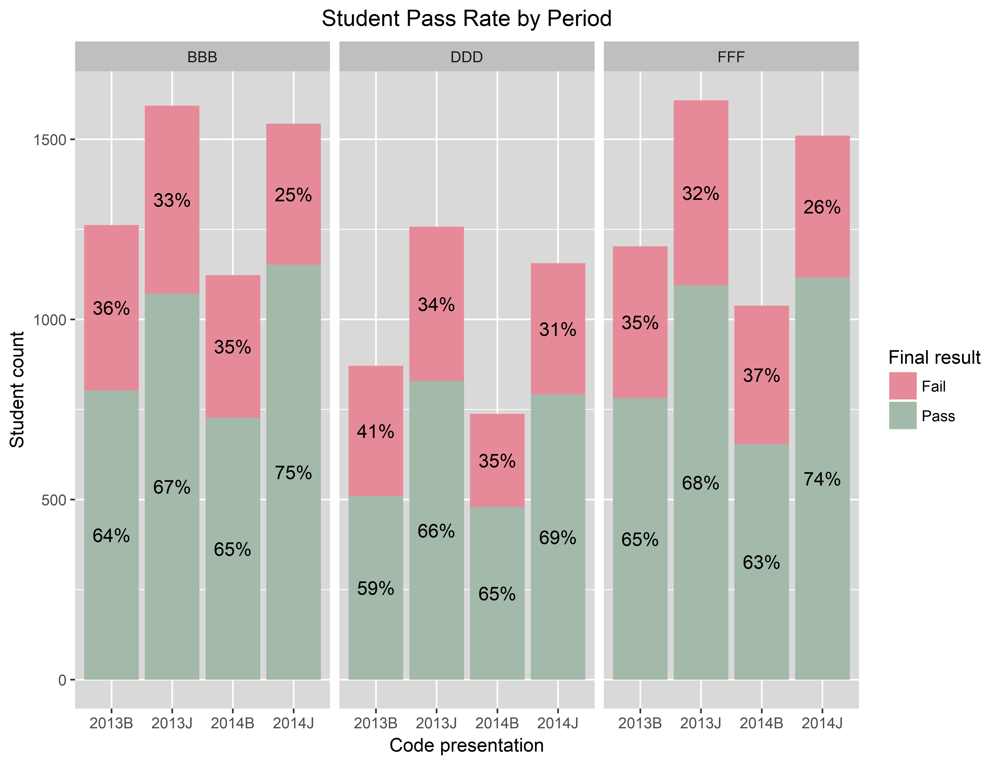

Student Performance Prediction:
A Deep Learning Approach
In this project I use Long Short-Term Memory networks (LSTMs) to predict the performance of Open University students. In addition, I compare the performance of the LSTMs with that of traditional machine learning models including decision trees, random forests, support vector machines, feed forward neural networks and more. I made use of the R programming language for most of the data formatting, while I used Python, in particular the Keras and scikit-learn packages, for modeling and normalization purposes.
Introduction
In January 2019, I obtained my master's degree after defending my master's thesis in which I showed that LSTMs can be of value when used to predict student performance compared to more commonly used machine learning models. In this project I replicate the research done in said thesis, be it with some modifications. The biggest change being the ability of this project's models to account for students joining the university's courses at different points in time due to changes in the data normalization methods. Consequently, the results of this project are better generalizable to educational settings in which students do not all start a course simultaneously, as is for example the case in most Massive Open Online Courses (MOOCs).
Predicting student performance is one of the most popular streams of research in the field of educational data mining. Being able to accurately predict student performance at an early stage could prove valuable in numerous ways. For example, when students that are at risk of failing a course can be identified, appropriate measures could be taken to assist these students. Pilot tests of these type of systems have already been conducted at Purdue University with promising results. (Arnold & Pistilli, 2012) The implemented systems managed to increase student retention rates as well as improve course grades. In addition, better admission policies could be designed when accurate prediction of student performance is feasible. In order to capture these benefits, accurate algorithms are necessary. Considering that deep learning methods are currently the state-of-the-art when it comes to predictive analytics, it is peculiar that so little research applying deep learning models to student performance prediction is available. My thesis (and by extension this project) serve as an attempt to fill that gap in the literature.
Public student data from the Open University Learning Analytics Dataset (OULAD) is used to compare the student performance prediction prowess of LSTMs and traditional machine learning models including decision trees, random forests, support vector machines, logistic regression models, naive Bayes classifiers and feed forward neural networks. The files of my code as well as my thesis can be found on my GitHub page.
Data Understanding
The OULAD is a public dataset which contains anonymized data on roughly 30.000 students over seven distinct courses. The data covers a timespan of two years divided into a maximum of 4 periods (or presentations). The four distinct course presentations in this dataset include courses started in February 2013 (2013B) and February 2014 (2014B) as well as courses that started in October 2013 (2013J) and October 2014 (2014J). For each student in those courses, the dataset contains not only student information such as gender, highest education level, age band and region but also information on the clicks of the students in the Virtual Learning Environment (VLE) as well as data on the assessments that the students took and their assessment scores.
In order to make some visualizations of the data in R, it is first necessary to load the required packages and import the CSV files. I used the dplyr package for data formatting and the ggplot2 package for visualization purposes.
library("dplyr")
library("ggplot2")
# Import public Open University dataset
assessments <- read.csv("assessments.csv")
courses <- read.csv("courses.csv")
studentAssessment <- read.csv("studentAssessment.csv")
studentInfo <- read.csv("studentInfo.csv")
studentRegistration <- read.csv("studentRegistration.csv")
studentVle <- read.csv("studentVle.csv")
vle <- read.csv("vle.csv")
Now that the packages and datasets are loaded in, we can make our first graph visualizing the distribution of students over the different course presentations.
ggplot(data = studentInfo, aes(x = code_presentation, # Create a barchart with the data from the studentInfo dataframe
fill = code_module)) +
geom_bar(stat = 'count', position=position_dodge()) + # Make sure the height of the bars represents the count of students
facet_grid(.~code_module) + # Create the bar charts for each course (code_module)
theme(axis.text.x = element_text(angle = 90, vjust = 0.5), # Add some visual polish
axis.ticks.x = element_blank(),
panel.grid.major.x = element_blank(),
plot.title = element_text(hjust = 0.5),
panel.background = element_rect(fill = "grey85"),
plot.background = element_rect(fill = "transparent", color = NA),
strip.background = element_rect(fill = "grey75", colour = NA))+
scale_fill_brewer(palette="Set2") +
guides(fill=FALSE) +
ggtitle("Student Distribution") + # Add plot title
xlab("Code presentation") + # Add x-label
ylab("Student count") + # Add y-label
ggsave(filename = "Student Distribution.png", # Export the graph as a .png file
bg = "transparent", dpi = 600)
The code above generates the figure depicted below. The figure made with the ggplot2 package shows that the number of students varies wildly between courses. All courses except for GGG appear to have more students that start their course in October as opposed to February. The figure also illustrates that not all the courses are taught in all four periods. Only three out of the seven courses were taught for all four of the course presentations. Their course codes are BBB, DDD and FFF. Because those are the three courses with the most data samples, I decided to only make models and keep the data for those three courses.

Because of the anonymized nature of the dataset, the specific titles of the courses have not been revealed. The only information available on these courses is that course BBB is a social science course, while courses DDD and FFF belong to the science, technology, engineering and mathemetics (STEM) field. The course duration differs from period to period. When the course starts in October it tends to be longer than when it starts in February. Each of the three courses has graded assessments the students are expected to complete. However, if the student fails the final exam, they fail the course even if they have satisfactory assessment score. The amount of assessments in course FFF did not change over the four course presentation. However, courses BBB and DDD did experience structural changes when it comes to their assessments. The number of TMAs (Tutor Marked Assessments), CMAs (Computer Marked Assessments), their dates and the course duration are depicted in the three figures below.
Course BBB Assessments
Course DDD Assessments
Course FFF Assessments

As can be seen in the figures above, the final exam date is not always available. If that is the case, I assumed that the final exam took place on the final day of the course based on the following quote in the official OULAD documentation: "If the information about the final exam date is missing, it is at the end of the last presentation week."
Because nothing can be said about the final result of students that dropped out of the course, I removed all of the students that did not finish the course from the dataset. Specific drop-out prediction models are better suited to identify the students that will withdraw from the course. The final results of the students are categorized as either "fail", "pass", or "distinction". The models' prediction accuracy scores are likely to suffer significantly from having three target variable labels instead of two. That combined with the notion that the distinction between students that pass or fail a course is likely to be of more importance than that between students that pass or pass with distinction, made me decide to merge the "distinction" and "pass" target labels into one combined "pass" label.
studentInfo <- studentInfo[studentInfo$code_module %in% c("BBB","DDD","FFF"),] # Only retain students from courses BBB, DDD and FFF in the studentInfo df
studentInfo <- studentInfo[studentInfo$final_result != "Withdrawn",] # Remove those students that dropped out
studentVle <- studentVle[studentVle$code_module %in% c("BBB","DDD","FFF"),] # Only retain students from courses BBB, DDD and FFF in the studentVle df
studentInfo$final_result[studentInfo$final_result == "Distinction"] <- "Pass" # Turn the "Distinction" final result into "Pass"
Now it is possible to examine the data further for the three specified courses with a particular focus on the relationship between the variables and the final result. I personally like to make stacked bar charts for this purpose conveying the student pass rate for each categorical variable's level. The dplyr package is used to compute this pass rate statistic as is shown in the code below. Afterwards, ggplot2 is used once again to generate the chart. First, we take a look at the student pass rate by course presentation. To reiterate, the course presentation can be seen as the period in which the course takes place.
studentInfo %>%
mutate(code_presentation = as.factor(code_presentation), # Make sure factors have the right type
final_result = as.factor(final_result),
code_module = as.factor(code_module)) %>%
group_by(code_module, code_presentation, final_result) %>% # Group the data
summarise(count_final_result = n()) %>% # Get the count of students per group
mutate(count_man = sum(count_final_result)) %>% # Get the count of student in each course presentation
mutate(percent = count_final_result / count_man * 100) %>% # Compute the pass rate per presentation
ungroup() %>%
ggplot(aes(x = code_presentation, # Plot barchart with student pass rates
y = count_final_result,
group = final_result)) +
geom_bar(aes(fill = final_result),
stat = "identity") +
geom_text(aes(label = sprintf("%0.0f%%", percent)), # Add visual polish
position = position_stack(vjust = 0.5),
check_overlap = TRUE) +
theme(plot.title = element_text(hjust = 0.5),
panel.background = element_rect(fill = "grey85"),
plot.background = element_rect(fill = "transparent", color = NA),
strip.background = element_rect(fill = "grey75", colour = NA),
legend.background = element_rect(fill = "transparent", color = NA)) +
scale_fill_manual(values = c("#E68A99","#A3B9AA")) + # Bar colors
ggtitle("Student Pass Rate by Period") + # Add plot title
xlab("Code presentation") + # Add x-label
ylab("Student count") + # Add y-label
labs(fill = "Final result") + # Add legend title
facet_grid(.~code_module) + # Create the bar charts for each course (code_module)
ggsave(filename = "PR_plot.png", # Export the graph as a .png file
bg = "transparent", dpi = 600)
Similar to the first graph, this bar chart shows the student count in each course presentation, but this time only for course BBB, DDD and FFF respectively. On top of that, the graph shows the pass rate in each period. On a first glance, we can say that the pass rate in each period is between 59 and 75 percent. Moreover, the courses taught in the final period, October 2014, appear to have a slightly higher passing rate than the three preceding periods for these three courses. This difference is more pronounced in course BBB and FFF than in DDD however. On average, the passing rates do not appear to be vastly different between courses.
The next graph shows the passing rate by gender. The code in the following bar charts is virtually the same as in the code block above. The only differences are the replacement of the categorical variable on the x-axis and some changes in the visual polish such as font size. Each of the three courses appears to have a significantly different gender distribution. In course BBB, a social science course, there are disproportionately more female students than male students. In contrast, there are significantly more male students than female students in course FFF, which is a STEM course. Course DDD, another STEM course, also has more male than female students, but the discrepancy is not as big. The one thing the three courses have in common is that female students appear to do slightly better than male students judging from their superior pass rate.
The following bar chart illustrates the pass rate by age band. The student either belongs in age category 0-35, 35-55 or 55+. The figure shows that there are very little students that are 55 years or older. By far the most of the students belong in the 0-35 age category. It is interesting to note that students between 35 and 55 years old appear to perform slightly better than the younger students. The sample size of older students is too small to base conclusions off of.

The relationship between the students' former education level and pass rate is depicted in the graph below. On average, it appears to be the case that the higher the education level, the higher the pass rate is. This indicates that highest education level might be an interesting predictor for student performance. The distributions are also widely similar among courses with the bulk of the students having either a A-level or lower qualification, while only a select few students have no formal qualifications or a post graduate degree.

The OULAD also contains information on the amount of times the students attempted the course. The next plot shows that students that do not have any previous attempts, have a higher pass rate than students students that do have one or two previous attempts. The number of students that attempt a course more than three times is so small that it becomes difficult to draw any conclusions from those groups.

The following graph shows that a small fraction of the students has a disability. These students seem to perform slightly worse than students that do not have a disability. The particular type of disability could provide more insight into the effect of certain disabilities on student performance, but this data is not available and due to ethical concerns it might not be appropriate to use in performance predictions.
 <
<The relationship between pass rate and IMD band is showcased in the next plot. IMD stand for Index of Multiple Deprivation and it's England's official measure of relative deprivation for small areas or neighborhoods. This measure says something about how deprived the student's neighborhood is relative to other neighborhoods ranging from the least deprived (90-100% band) to the most deprived (0-10% band). The bar without a label comprises the students whose IMD index value was missing. It is interesting to note that a large proportion of students with missing values for IMD band passed the course. This might indicate that having a missing value for IMD band has some predictive power when it comes to predicting student performance. Therefore, it might be worth it to look into why these values are missing. In general, it seems to be the case that the less deprived the student's neighborhood, the higher the passing rate. In other words, students living in well-off areas tend to perform better.

Due to the many categories involved in the studied credits variable, I chose to plot the relationship between the number of credits for the modules the student is currently studying and the pass rate by means of a box plot. The very similar box plots below show that there is hardly any connection to be drawn between the number of credits a student is studying and his or her likelihood to pass the course.
ggplot(data = studentInfo,aes(x = final_result,
y = studied_credits,
fill = factor(final_result, levels = c("Fail", "Pass")))) +
geom_boxplot() + # Create a boxplot
scale_y_continuous(limits=c(0, 450)) + # Determine scale cut-off values
theme(plot.title = element_text(hjust = 0.5), # Add visual polish
panel.background = element_rect(fill = "grey85"),
plot.background = element_rect(fill = "transparent", color = NA),
strip.background = element_rect(fill = "grey75", colour = NA),
legend.background = element_rect(fill = "transparent", color = NA)) +
scale_fill_manual(values = c("#E68A99","#A3B9AA")) +
ggtitle("Student Pass Rate by Studied Credits") +
xlab("Final result") +
ylab("Studied credits") +
labs(fill = "Final result") +
facet_grid(.~code_module) +
ggsave(filename = "PR_credits_plot.png",
bg = "transparent", dpi = 600)
Due to the fact that the number of times students click in the VLE each day gets recorded, it is possible to plot the average number of clicks over time for those students that passed as well as those that failed the course, which is exactly what is shown in the graph below. The graphs illustrate that there are some clear patterns when it comes to the number of clicks in the VLE for the different courses. For example, in course FFF the average number of clicks substantially increase as the course nears the end. The daily amount of clicks here also seems more volatile for failing students than for passing students. The other two courses appear to have more subtle patterns. There also are some clear outliers in the data. The sudden spike in the 2014B course period for course DDD is the most noteable. There are a few instances in which students have an extraordinarily large amount of clicks (6000+) on a certain day. It is not clear whether this is due to faulty data collection or whether the student actually clicked that many times. It could be worth it to examine whether these clicks have predictive power when it comes to predicting student performance. The type of object that the student clicked on within the VLE can also be identified. Perhaps there are certain resources students can click on that say relatively more about the students' chances of success.
studentVle_fr <- merge(studentVle, studentInfo[,c(1:3,12)], by.x = c(1,2,3)) # Merge studentVle and studentInfo dataframes
studentVle_fr[,-c(4)] %>% # Use the new df without site_id variable
mutate(date = as.integer(date), # Make sure variables have appropriate types
sum_click = as.integer(sum_click),
code_module = as.factor(code_module),
final_result = as.factor(final_result),
code_presentation = as.factor(code_presentation)) %>%
distinct(code_module, code_presentation,id_student, sum_click, date, final_result) %>% # Remove duplicate rows
group_by(code_module,code_presentation, final_result, date) %>% # Group df
summarise(avg_clicks = mean(sum_click)) %>% # Compute avg clicks summary statistic
ungroup() %>%
ggplot(mapping = aes(x = date, y = avg_clicks, group = final_result, color = final_result)) + # Plot linechart
geom_line(size=1.0) +
theme(plot.title = element_text(hjust = 0.5), # Visual polish
panel.background = element_rect(fill = "grey85"),
plot.background = element_rect(fill = "transparent", color = NA),
strip.background = element_rect(fill = "grey75", colour = NA),
legend.background = element_rect(fill = "transparent", color = NA)) +
scale_color_manual(values = c("#E68A99","#A3B9AA")) +
ggtitle("Students' Average Clicks over Time") +
xlab("Date") +
ylab("Average clicks") +
labs(color = "Final result") +
facet_grid(code_module ~ code_presentation) +
ggsave(filename = "Clicks_Time_plot.png",
bg = "transparent", dpi = 600)
The scatterplot below shows the relationship between the sum of clicks and the number of days the student was active in the VLE. In this case, active means that the student clicked at least one time in the VLE that specific day. Instead of showing the progression over time, this plot utilizes the measures computed by the end of the course. It is apparent that students that did not click in the VLE often and were not active on the platform for many days are more likely to fail the course than active students with a lot of clicks. Naturally, there are some exceptions but the overall pattern is evident and makes intuitive sense.
studentVle_fr[,-c(4)] %>%
mutate(date = as.integer(date),
sum_click = as.integer(sum_click),
code_module = as.factor(code_module),
final_result = as.factor(final_result),
id_student = as.factor(id_student),
code_presentation = as.factor(code_presentation)) %>%
distinct(code_module, code_presentation,id_student, sum_click, final_result) %>%
group_by(code_module,code_presentation, id_student) %>%
mutate(sum_clicks = sum(sum_click)) %>% # compute sum of clicks for each student
mutate(active_days = n())%>% # compute active days for each student
ungroup() %>%
distinct(code_module, code_presentation,id_student,active_days, sum_clicks, final_result) %>%
ggplot(mapping = aes(x = sum_clicks, y = active_days, color = final_result)) +
geom_point(alpha = 0.2) + # scatterplot
theme(plot.title = element_text(hjust = 0.5),
panel.background = element_rect(fill = "grey85"),
plot.background = element_rect(fill = "transparent", color = NA),
strip.background = element_rect(fill = "grey75", colour = NA),
legend.background = element_rect(fill = "transparent", color = NA)) +
scale_color_manual(values = c("#E68A99","#A3B9AA")) +
ggtitle("Students' Active Days by Sum of Clicks") +
xlab("Sum of clicks") +
ylab("Active days") +
labs(color = "Final result") +
facet_grid(code_module ~ code_presentation) +
ggsave(filename = "Days_Clicks_plot.png",
bg = "transparent", dpi = 600)
There are a number of assessments students have to complete during the courses. The following line charts show the average assessment scores over time for both students that failed and students that passed the course. There appears to be a clear distinction in average assessment scores between failing and passing students. Not surprisingly, assessment scores could therefore be a valuable predictor for student performance. Since the assessment structure for course BBB changed in October 2014, the pattern is different than in the previous years. The university decided to implement a smaller amount of assessments than in the periods before. The same goes for October 2013 in course DDD. The assessment structure in course FFF stayed the same over all four periods. The structural changes at different points in time might be a valuable indicator of the models' stability. It would be interesting to see how much worse the models perform for courses BBB and DDD compared to course FFF if they do at all.
# merge dataframes to have the necessary data in one dataframe
studentAssessment_fr <- merge(studentAssessment, assessments[,c(1:5)], by.x = 1)
studentAssessment_fr <- merge(studentAssessment_fr, studentInfo[,c(1:3,12)], by.x = c(2,6,7))
studentAssessment_fr[!is.na(studentAssessment_fr$score),-c(4,5,6,8)] %>%
mutate(date = as.integer(date),
score = as.integer(score),
code_module = as.factor(code_module),
final_result = as.factor(final_result),
code_presentation = as.factor(code_presentation)) %>%
distinct(code_module, code_presentation,id_student, score, date, final_result) %>%
group_by(code_module,code_presentation, final_result, date) %>%
summarise(avg_score = mean(score)) %>% # compute average score per final result class
ungroup() %>%
ggplot(mapping = aes(x = date, y = avg_score, group = final_result, color = final_result)) +
geom_line(size = 1.2) +
theme(plot.title = element_text(hjust = 0.5),
panel.background = element_rect(fill = "grey85"),
plot.background = element_rect(fill = "transparent", color = NA),
strip.background = element_rect(fill = "grey75", colour = NA),
legend.background = element_rect(fill = "transparent", color = NA)) +
scale_color_manual(values = c("#E68A99","#A3B9AA")) +
ggtitle("Assessment Score Over Time") +
xlab("Date") +
ylab("Average score") +
labs(color = "Final result") +
facet_grid(code_module ~ code_presentation) +
ggsave(filename = "Score_Date_plot.png",
bg = "transparent", dpi = 600)

Now that we have gotten a better understanding of our data and an idea of which variables could be useful to predict student performance, we can conclude the data understanding phase. The variables that we can consider to use for our models can be categorized into two groups. First, the variables that are not tracked over time (stationary variables) such as age, gender, highest education etc. Second, the variables that are tracked over time, such as the number of clicks, the average assessment score and the number of assessments completed each day. After some initial tests using backward selection, I found that the stationary variables do not significantly improve the performance of the models when added to the variables that are tracked over time. The performance of the models did not appear to improve beyond the three variables of (1) the amount of times a student clicks in the VLE every day, (2) the amount of assessments the student completed every day and (3) the student's average assessment score updated daily. However, since it's also possible with the OULAD to break down the clicks in the VLE, it would be interesting to explore the effects of including the categories of resources that students clicked on in the VLE as additional predictors at a later stage. Additionally, I still want to create a complete LSTM model with the stationary features included as auxiliary features at a later stage. For now however, the focus remains on the three non-stationary features mentioned above. The next challenge is to prepare the data in such a way that it can be used as input for the models.
Data Preparation
In this data preparation phase I will demonstrate how I cleaned, formatted and normalized the data so that it can be used as input for the models. Because the LSTMs and the traditional machine learning models require differing data input formats, we will end up with two datasets with different formats. The LSTM requires a three-dimensional array as input corresponding to (samples, time steps, features) in which the samples are the students, the time steps are the course days and the features are the variables. In contrast, the traditional machine learning methods do not take into account the time steps and only require a two-dimensional array of (samples, features). To make sure that both models work with exactly the same data, I merged the time steps with the features dimension for the traditional machine learning models. Consequently, there will not just be a single "number of clicks" variable for example. Instead, there will be multiple feature columns for the number of clicks at each distinct day in the course. The difference between the LSTMs and the traditional methods in this case is that the LSTMs by design take into account the time dimension of the data and will recognize that the clicks at course day 30 will occur later in the sequence than the clicks at course day 5. Because the order of the feature columns does not matter when it comes to traditional methods, the traditional models will not be able to make this distinction. More on the differences between LSTMs and the common machine learning methods can be found in the Modeling section.
Section 1: Data Transformation Using R
Just like in the previous section we have to load in the packages and data as well as only retain non-dropouts from courses BBB, DDD and FFF. Additionally, we create a new student identifier feature merging the student ID with the course code and course presentation for more convenient data formatting.
#Load packages
library("dplyr")
# Import public Open University dataset
studentInfo <- read.csv("studentInfo.csv")
courses <- read.csv("courses.csv")
studentRegistration <- read.csv("studentRegistration.csv")
assessments <- read.csv("assessments.csv")
studentAssessment <- read.csv("studentAssessment.csv")
studentVle <- read.csv("studentVle.csv")
vle <- read.csv("vle.csv")
# Create an identifier for each student combining course module, course presentation and student id
studentInfo$identifier <- paste(studentInfo$code_module, studentInfo$code_presentation, studentInfo$id_student)
# Only retain students in courses BBB, DDD and FFF & remove those that dropped out
studentInfo <- studentInfo[studentInfo$code_module %in% c("BBB","DDD","FFF"),]
withdrawnStudents <- studentInfo[studentInfo$final_result == "Withdrawn",]
studentInfo <- studentInfo[studentInfo$final_result != "Withdrawn",]
studentVle <- studentVle[studentVle$code_module %in% c("BBB","DDD","FFF"),]
studentRegistration <- studentRegistration[studentRegistration$code_module %in% c("BBB","DDD","FFF"),]
| code_module | code_presentation | id_student | gender | region | highest_education | imd_band | age_band | num_of_prev_attempts | studied_credits | disability | final_result | |
|---|---|---|---|---|---|---|---|---|---|---|---|---|
| 1 | AAA | 2013J | 11391 | M | East Anglian Region | HE Qualification | 90-100% | 55<= | 0 | 240 | N | Pass |
| 2 | AAA | 2013J | 28400 | F | Scotland | HE Qualification | 20-30% | 35-55 | 0 | 60 | N | Pass |
| 3 | AAA | 2013J | 30268 | F | North Western Region | A Level or Equivalent | 30-40% | 35-55 | 0 | 60 | Y | Withdrawn |
| code_module | code_presentation | module_presentation_length | |
|---|---|---|---|
| 1 | AAA | 2013J | 268 |
| 2 | AAA | 2014J | 269 |
| 3 | BBB | 2013J | 268 |
| code_module | code_presentation | id_student | date_registration | date_unregistration | |
|---|---|---|---|---|---|
| 1 | AAA | 2013J | 11391 | -159 | |
| 2 | AAA | 2013J | 28400 | -53 | |
| 3 | AAA | 2013J | 30268 | -92 | 12 |
| code_module | code_presentation | id_assessment | assessment_type | date | weight | |
|---|---|---|---|---|---|---|
| 1 | AAA | 2013J | 1752 | TMA | 19 | 10.00 |
| 2 | AAA | 2013J | 1753 | TMA | 54 | 20.00 |
| 3 | AAA | 2013J | 1754 | TMA | 117 | 20.00 |
| id_assessment | id_student | date_submitted | is_banked | score | |
|---|---|---|---|---|---|
| 1 | 1752 | 11391 | 18 | 0 | 78 |
| 2 | 1752 | 28400 | 22 | 0 | 70 |
| 3 | 1752 | 31604 | 17 | 0 | 72 |
| code_module | code_presentation | id_student | id_site | date | sum_click | |
|---|---|---|---|---|---|---|
| 1 | AAA | 2013J | 28400 | 546652 | -10 | 4 |
| 2 | AAA | 2013J | 28400 | 546652 | -10 | 1 |
| 3 | AAA | 2013J | 28400 | 546652 | -10 | 1 |
| id_site | code_module | code_presentation | activity_type | week_from | week_to | |
|---|---|---|---|---|---|---|
| 1 | 546943 | AAA | 2013J | resource | ||
| 2 | 546712 | AAA | 2013J | oucontent | ||
| 3 | 546998 | AAA | 2013J | resource |
As we have seen in the previous section, not all the exam dates are available. Some of them are registered as missing values. The OULAD documentation showed that if the exam date is missing, it took place at the end of the final course week. Therefore, I imputed the missing values with the final course presentation day using a for-loop.
# Impute missing exam dates with the final day of the course
# [Official documentation: "If the information about the final exam date is missing, it is at the end of the last presentation week."]
for(i in 1:nrow(assessments)){
m <- as.character(assessments$code_module[i])
p <- as.character(assessments$code_presentation[i])
if (is.na(assessments$date[i]) & assessments$assessment_type[i] == "Exam"){
assessments$date[i] <- courses$module_presentation_length[courses$code_module == m & courses$code_presentation == p]
}
}
Next, I ended up merging datasets to get a more comprehensive representation of the data instead of information being spread out over multiple datasets. The FullVle dataframe combines data on the students' actions in the VLE and the information on the resources in the VLE. The FullAssessments dataframe combines data on the students' activity when it comes to assessments as well as the information on the assessments themselves. The final exam date is also added as a column to the FullAssessments dataframe. Additionally, the duplicated data instances are removed and the names of two columns are updated to better reflect their meaning.
# Merge dataframes
FullAssessments <- merge(x = studentAssessment, y = assessments[assessments$code_module %in% c("BBB","DDD","FFF"),], by = "id_assessment")
FullVle <- merge(x = studentVle, y = vle[,c(1,4)], by = "id_site")
FullAssessments <- merge(x = FullAssessments, y = assessments[assessments$assessment_type == "Exam",c(1,2,5)], by = c("code_module", "code_presentation"), all.x = TRUE) # Add final exam date to FullAssessments df
FullAssessments <- FullAssessments[!duplicated(FullAssessments),] # Remove duplicate rows
names(FullAssessments)[c(9,11)] <- c("date", "exam_date") # Change column names
| code_module | code_presentation | id_assessment | id_student | date_submitted | is_banked | score | assessment_type | date | weight | exam_date | |
|---|---|---|---|---|---|---|---|---|---|---|---|
| 1 | BBB | 2013B | 14984 | 281564 | 17 | 0 | 60 | TMA | 19 | 5.00 | 240 |
| 2 | BBB | 2013B | 14984 | 405995 | 19 | 0 | 77 | TMA | 19 | 5.00 | 240 |
| 3 | BBB | 2013B | 14984 | 404022 | 18 | 0 | 87 | TMA | 19 | 5.00 | 240 |
Next, a new dataframe is created to store the exam submission dates of students, since students in course DDD have differing submission dates. In other words, the exam was not taken by all students at the same moment in time. Afterwards, we add this "exam_submitted_date" column to the bigger FullAssessments dataframe. This column features the exam submission dates of DDD students that we just retrieved, while it shows missing values for students from course BBB and FFF since their exam submission date is not avaiable. For these students we use the final exam date as their submission date, assuming that everyone in these two courses has a predetermined examination date. Finally, only the assessments that took place before the final exam are retained because I want to predict whether the student passes or fails the course before the final exam has taken place.
# In course DDD students have differing exam submission dates, so a dataframe is created to collect those.
DDD_examdates <- FullAssessments %>%
select(code_module, code_presentation, id_student,assessment_type, date_submitted) %>%
filter(assessment_type == "Exam")
DDD_examdates$assessment_type <- NULL
names(DDD_examdates)[4] <- "exam_submitted_date"
FullAssessments <- merge(x = FullAssessments, y = DDD_examdates, by = c("code_module", "code_presentation", "id_student"), all.x=TRUE) # Add exam_submitted date column of DDD course to the FullAssessments dataframe
FullAssessments$exam_submitted_date[is.na(FullAssessments$exam_submitted_date)] <- FullAssessments$exam_date[is.na(FullAssessments$exam_submitted_date)] # Impute the exam_submitted dates of the other two courses with exam_date
FullAssessments <- FullAssessments[FullAssessments$date_submitted < FullAssessments$exam_submitted_date,] # Only retain those assessments that occured before the final exam submission date
Furthermore, I add the exam submission date to the studentRegistration dataframe which contains information on the registration and deregistration of students. I also did not retain the deregistered students in the dataset in line with the reasoning to exclude drop-outs explained earlier. The for-loop below makes sure that the exam_submission_date is imputed with the course presentation's exam date whenever the submission date is missing.
# Add the exam submission date from the FullAssesments df to each student record in the studentRegistration df
studentRegistration <- merge(x = studentRegistration[is.na(studentRegistration$date_unregistration),], y = FullAssessments[,c(1,2,3,12)], by = c("code_module", "code_presentation", "id_student"), all.x = TRUE)
studentRegistration <- studentRegistration[!duplicated(studentRegistration),]
# Make sure that if the exam_submission_date is not available, it is imputed with exam date of the course presentation from the assessments df
for (i in 1:nrow(studentRegistration)){
if (is.na(studentRegistration$exam_submitted_date[i]) == TRUE){
studentRegistration$exam_submitted_date[i] <- assessments$date[assessments$assessment_type == "Exam" &
assessments$code_module == studentRegistration$code_module[i] &
assessments$code_presentation == studentRegistration$code_presentation[i]]
}
}
The following piece of code is used to compute the variables we wanted to use for the prediction. In particular, the number of assignments submitted before the final exam date, the student's average score updated daily and the student's daily number of clicks in the VLE.
# Compute the number of assignments submitted before the final exam date and the average score which is updated daily
FullAssessments <- merge(x = FullAssessments[,1:8], y = studentRegistration[,c(1:4,6)], by = c("code_module", "code_presentation", "id_student"), all.y = TRUE) # Add registration date & finalized exam submission date to FullAssessments df
AsgmtCounts <- aggregate(id_assessment ~ code_module + code_presentation + id_student + date_submitted, data = FullAssessments, FUN = length) # Compute the number of assessments each student submitted every day
names(AsgmtCounts)[5] <- "Asgmt_Count"
AsgmtScores <- aggregate(score ~ code_module + code_presentation + id_student + date_submitted, data = FullAssessments, FUN = sum) # Compute the sum of assessment scores every day
names(AsgmtScores)[5] <- "Asgmt_sumScore"
# Create a new dataframe in which daily assessment counts and scores are added to the studentRegistration dataframe
Asgmts <- merge(x = studentRegistration[,c(1:4,6)], y = AsgmtCounts,by = c("code_module", "code_presentation", "id_student"))
Asgmts <- merge(x = Asgmts, y = AsgmtScores,by = c("code_module", "code_presentation", "id_student", "date_submitted"))
names(Asgmts)[4] <- "date"
# Compute the number of clicks a student made in a particular course and semester
Clicks <- aggregate(sum_click ~ code_module + code_presentation + id_student + date, data = FullVle, FUN=sum)
Clicks <- merge(x = Clicks[Clicks$code_module %in% c("BBB","DDD","FFF"),], y = studentRegistration[,c(1:4,6)], by = c("code_module", "code_presentation", "id_student"), all.y = TRUE)
Clicks <- Clicks[!duplicated(Clicks),] # Remove duplicated rows
Clicks <- Clicks[Clicks$date < Clicks$exam_submitted_date,] # Remove clicks that have been made on or after the final exam date conditional on course and semester
ClicksAsgmts <- merge(x = Clicks, y=Asgmts, by = c("code_module", "code_presentation", "id_student", "date", "date_registration", "exam_submitted_date"), all.x = TRUE, all.y = TRUE) # Merge Clicks and Asgmts dataframes
ClicksAsgmts <- ClicksAsgmts[apply(ClicksAsgmts,1,function(x)any(!is.na(x))),] # Remove rows in which all values are missing
| code_module | code_presentation | id_student | date | date_registration | exam_submitted_date | sum_click | Asgmt_Count | Asgmt_sumScore | |
|---|---|---|---|---|---|---|---|---|---|
| 1 | BBB | 2013B | 23629 | -6 | -47 | 240 | 14 | ||
| 2 | BBB | 2013B | 23629 | 2 | -47 | 240 | 9 | ||
| 3 | BBB | 2013B | 23629 | 4 | -47 | 240 | 14 |
The start of every course is marked as day 0. Students can often access the VLE before the course actually starts however. For example, when a student clicked in the VLE 25 days before his course actually starts, this is indicated by a value of -25 for the "date" variable. For modeling purposes, we want to create sequences from the point at which data started to be tracked for the specific course to the final day of the course. In the next block of code, the minimum and maximum dates of the courses are retrieved and the number of days the student has been active in the course are computed by subtracting the minimum date of each course by the maximum date. Additionally, values of 0 are imputed whenever no clicks or assignments have been observed on a certain day.
# Expand the date range from the earliest day in the course to the end of the course
min_date_BBB <- min(ClicksAsgmts$date[ClicksAsgmts$code_module == "BBB"]) # Minimum date of course BBB
min_date_DDD <- min(ClicksAsgmts$date[ClicksAsgmts$code_module == "DDD"]) # Minimum date of course DDD
min_date_FFF <- min(ClicksAsgmts$date[ClicksAsgmts$code_module == "FFF"]) # Minumum date of course FFF
ClicksAsgmts$min_date[ClicksAsgmts$code_module == "BBB"] <- min_date_BBB
ClicksAsgmts$min_date[ClicksAsgmts$code_module == "DDD"] <- min_date_DDD
ClicksAsgmts$min_date[ClicksAsgmts$code_module == "FFF"] <- min_date_FFF
max_date_BBB <- max(ClicksAsgmts$exam_submitted_date[ClicksAsgmts$code_module == "BBB"])
max_date_DDD <- max(ClicksAsgmts$exam_submitted_date[ClicksAsgmts$code_module == "DDD"])
max_date_FFF <- max(ClicksAsgmts$exam_submitted_date[ClicksAsgmts$code_module == "FFF"])
ClicksAsgmts$days[ClicksAsgmts$code_module == "BBB"] <- max_date_BBB - ClicksAsgmts$min_date[ClicksAsgmts$code_module == "BBB"]
ClicksAsgmts$days[ClicksAsgmts$code_module == "DDD"] <- max_date_DDD - ClicksAsgmts$min_date[ClicksAsgmts$code_module == "DDD"]
ClicksAsgmts$days[ClicksAsgmts$code_module == "FFF"] <- max_date_FFF - ClicksAsgmts$min_date[ClicksAsgmts$code_module == "FFF"]
There is no record if the student does not click in the VLE or submit an assessment on that specific day. However, we need all three of our variables to be full sequences in which all the days of the course are represented. Therefore, we make another dataframe to help construct this full sequence by replicating each row in the dataframe as many times as the amount of days the student spends in the course. Afterwards, we create a date column that accurately represents the order of days in each student's sequence. By merging this dataframe and the ClicksAsgmts dataframe with the three variables we can make the complete dataframe. The process of merging the dataset gives rise to missing values for the days in which students did not click in the VLE or did not submit any assignments. We impute these missing values with zeroes instead but only if the day is between the registration date of the student and the final exam submission date. All missing values before the student's registration date and after the student submitted his or her exam are transformed to "-1" values at a later stage. LSTMs can pad sequences with predetermined values so that they can essentially be skipped over without being taken into account during modeling. I chose for the "-1" value because that value cannot occur anywhere else in the sequence, which means it is appropriate to use for padding purposes. This padding procedure only works for LSTMs however. Therefore, we will transform the "-1" values to zeroes when we transform the LSTM dataset into the traditional machine learning model dataset.
# Make another df to help constructing a range of day registered until day before final exam for each student
dateReference <- merge(x= studentRegistration[,c(1:4,6)], y = ClicksAsgmts[,c(1,2,3,10,11,12)], by = c("code_module", "code_presentation", "id_student"), all.y = TRUE)
dateReference <- dateReference[!duplicated(dateReference),] # remove duplicate rows
row.names(dateReference) <- NULL # reset row names
dateReference <-dateReference[rep(row.names(dateReference), dateReference$day),] # replicate rows for the amount of days a student spent in the course
dateReference$date <- sequence(rle(as.character(dateReference$identifier))$lengths)+dateReference$min_date-1 # create date column representing the order of days in each student's sequence
# Merge ClicksAsgmts and dateReference dataframes to create a complete dataframe
fulldf <- merge(x = ClicksAsgmts, y = dateReference, by = c("code_module", "code_presentation", "id_student","identifier", "date", "date_registration", "exam_submitted_date", "min_date", "days"), all.y = TRUE)
fulldf <- fulldf[with(fulldf, order(code_module, code_presentation, id_student, date)),]
# Impute missing values after student registration and before final exam submission date with 0
fulldf$sum_click[is.na(fulldf$sum_click) & fulldf$date < fulldf$exam_submitted_date & fulldf$date >= fulldf$date_registration] <- 0
fulldf$Asgmt_Count[is.na(fulldf$Asgmt_Count) & fulldf$date < fulldf$exam_submitted_date & fulldf$date >= fulldf$date_registration] <- 0
fulldf$Asgmt_sumScore[is.na(fulldf$Asgmt_sumScore) & fulldf$date < fulldf$exam_submitted_date & fulldf$date >= fulldf$date_registration] <- 0
| code_module | code_presentation | id_student | identifier | date | date_registration | exam_submitted_date | min_date | days | sum_click | Asgmt_Count | Asgmt_sumScore | |
|---|---|---|---|---|---|---|---|---|---|---|---|---|
| 1 | BBB | 2013B | 23629 | BBB 2013B 23629 | -23.00 | -47 | 240 | -23 | 291 | |||
| 2 | BBB | 2013B | 23629 | BBB 2013B 23629 | -22.00 | -47 | 240 | -23 | 291 | |||
| 3 | BBB | 2013B | 23629 | BBB 2013B 23629 | -21.00 | -47 | 240 | -23 | 291 |
One of the variables we wanted to use was the average assessment score of the student updated daily. By using the daily sum of assessment scores variable and daily the sum of assessments variable stored in the dataframe we can compute this daily average score. The "ave" function in R makes it possible to compute the cumulative sum over level combinations of factors, in this case it is grouped by the composite student identifier.
# Compute average assignment score by using the cumulative sum of scores updated daily
fulldf$csum_score[!is.na(fulldf$sum_click)] <- ave(fulldf$Asgmt_sumScore[!is.na(fulldf$sum_click)], fulldf$identifier[!is.na(fulldf$sum_click)], FUN = cumsum)
fulldf$csum_asgmts[!is.na(fulldf$Asgmt_Count)] <- ave(fulldf$Asgmt_Count[!is.na(fulldf$Asgmt_Count)], fulldf$identifier[!is.na(fulldf$Asgmt_Count)], FUN = cumsum)
fulldf$Avg_score <- round(fulldf$csum_score/fulldf$csum_asgmts,2)
fulldf$Avg_score[is.nan(fulldf$Avg_score)] <- 0
Now it is time to finalize the dataset by including the relevant variables, imputing missing values with "-1" values for padding purposes and renaming variables where needed.
# Finalize complete dataframe used for modeling
fulldf <- fulldf[,c(1:5, 10, 11, 14, 15)]
fulldf <- merge(x = fulldf, y = studentInfo[,c(1:3, 12)], by = c("code_module", "code_presentation", "id_student"), all.x = TRUE)
fulldf <- fulldf[with(fulldf, order(code_module, code_presentation, id_student, date)),]
# Pad the shorter sequence lengths with '-1' values, so the LSTM knows when to start/end each sequence
fulldf$sum_click[is.na(fulldf$sum_click)] <- -1
fulldf$Asgmt_Count[is.na(fulldf$Asgmt_Count)] <- -1
fulldf$csum_asgmts[is.na(fulldf$csum_asgmts)] <- -1
fulldf$Avg_score[is.na(fulldf$Avg_score)] <- -1
fulldf$final_result <- droplevels(fulldf$final_result)
names(fulldf)[7] <- "asgmts"
| code_module | code_presentation | id_student | identifier | date | sum_click | asgmts | csum_asgmts | Avg_score | final_result | |
|---|---|---|---|---|---|---|---|---|---|---|
| 31138 | BBB | 2013B | 23629 | BBB 2013B 23629 | -23.00 | 0.00 | 0.00 | 0.00 | 0.00 | Fail |
| 31139 | BBB | 2013B | 23629 | BBB 2013B 23629 | -22.00 | 0.00 | 0.00 | 0.00 | 0.00 | Fail |
| 31140 | BBB | 2013B | 23629 | BBB 2013B 23629 | -21.00 | 0.00 | 0.00 | 0.00 | 0.00 | Fail |
Finally, the dataset is split in three smaller dataframes; one for each course. These are then exported as .csv files, so that they can be loaded into Python for normalization and modeling purposes.
# Split the dataframe into 3 smaller dataframes, 1 for each course
BBB_Train <- fulldf[fulldf$code_module == "BBB",]
DDD_Train <- fulldf[fulldf$code_module == "DDD",]
FFF_Train <- fulldf[fulldf$code_module == "FFF",]
# Write the dataframes to a csv file
write.csv(x = BBB_Train, "BBB_Train.csv")
write.csv(x = DDD_Train, "DDD_Train.csv")
write.csv(x = FFF_Train, "FFF_Train.csv")
Section 2: Data Transformation and Normalization Using Python
From now on, Python will be used to transform the datasets into their final format so they can serve as input for the LSTM. The additional transformations required to make the dataset compatible for the traditional machine learning models will also be done in Python. We start by loading in the required packages and the datasets that we just created in R.
import numpy as np
import pandas as pd
import matplotlib.pyplot as plt
%matplotlib inline
BBB = pd.read_csv("BBB_Train.csv", index_col = 0)
DDD = pd.read_csv("DDD_Train.csv", index_col = 0)
FFF = pd.read_csv("FFF_Train.csv", index_col = 0)
In order to save space, course BBB will be the main example in the following code blocks. All operations that were executed on course BBB, were also applied to courses DDD and FFF. For our models we will be using the cumulative sum of assignments as a variable instead of the amount of assignments completed per day. Therefore, we drop the "asgmts" column.
# delete variable presenting the number of assignments made each day as we have the cumulative sum
BBB = BBB.drop(["asgmts"], axis = 1)
Because the models work better when the variables are on the same scale, we normalize the data so that each value lies between 0 and 1. Otherwise, the discrepancy between the scales in variables could lead to one variable being inaccurately deemed as more important. Therefore, the values for the average assessment score feature are divided by 100 and the values for the cumulative sum of assignments submitted feature are divided by the total number of assignments in the corresponding course presentation.
# Divide the average score column by 100 (since 100 is the max score)
BBB["Avg_score"][BBB["csum_asgmts"] != -1] = BBB["Avg_score"][BBB["csum_asgmts"] != -1]/100
# Divide the cumulative sum of assignments submitted column by the total number of assignments in the corresponding course presentation
Courses = ["BBB", "DDD", "FFF"]
Presentations = ["2013B", "2013J", "2014B", "2014J"]
# Order: 2013B, 2013J, 2014B, 2014J
total_asgmts_BBB = list(BBB.groupby(by = "code_presentation").csum_asgmts.max())
for i in range(len(Presentations)):
BBB["csum_asgmts"][(BBB["code_presentation"]==Presentations[i]) & (BBB["csum_asgmts"] != -1)] = BBB["csum_asgmts"]/total_asgmts_BBB[i]
Next, we split the datasets into train and test sets with the three first course periods serving as training set and the final presentation (October 2014) as test set. I chose for this approach instead of a standard random train-test split because it will better reflect the models' performance in a real-life scenario as the model has to be able to handle structural changes in courses. Fortunately, we have two courses (BBB and DDD) that changed over time and a benchmark in course FFF that did not appear to change over time. Therefore, we will be able to assess the capability of the models to deal with structural changes better this way compared to going for a traditional random split. After splitting up the datasets, we sort the rows based on identifier and date and we remove unnecessary variables so that only the code presentation, identifier, date, the final result and the three predictors remain.
# Split the datasets in train and test sets (2014J = test set, while 2013B, 2013J and 2014B comprise the training set)
BBB_Test = BBB[BBB["code_presentation"] == "2014J"]
BBB_Train = BBB[BBB["code_presentation"] != "2014J"]
# Sort by identifier and date
BBB_Train = BBB_Train.sort_values(by = ['identifier','date'])
BBB_Test = BBB_Test.sort_values(by = ['identifier','date'])
# Make new datasets with only the relevant variables
BBB_LSTM_Train = BBB_Train.loc[:,["code_presentation","identifier","date","sum_click", "csum_asgmts", "Avg_score", "final_result"]]
BBB_LSTM_Test = BBB_Test.loc[:,["code_presentation","identifier","date","sum_click", "csum_asgmts", "Avg_score", "final_result"]]
| code_presentation | identifier | date | sum_click | csum_asgmts | Avg_score | final_result | |
|---|---|---|---|---|---|---|---|
| 1 | 2013B | BBB 2013B 1008675 | -23 | 0 | 0.0 | 0.0 | Pass |
| 2 | 2013B | BBB 2013B 1008675 | -22 | 0 | 0.0 | 0.0 | Pass |
| ... | ... | ... | ... | ... | ... | ... | ... |
| 1122968 | 2014B | BBB 2014B 99799 | 266 | -1 | -1.0 | -1.0 | Pass |
| 1122969 | 2014B | BBB 2014B 99799 | 267 | -1 | -1.0 | -1.0 | Pass |
Because by far most of the values belonging to the "sum_click" variable are zeroes for each course presentation, the distribution of values is greatly skewed to the right. Additionally, the data includes a few outliers of students who clicked thousands of times in the VLE on certain days. Therefore, we do not just rescale the range from 0 to 1, but we also apply a log transformation. The scaler is only fitted to the training data and afterwards applied to the test data. Therefore, it is possible to make predictions on individual students and it is not required to first have a batch of students before it is possible to make predictions. This in contrast to the normalization method in my thesis where I decided to use binning for each seperate course period instead.
# Import MinMaxScaler from the sci-kit learn package
from sklearn.preprocessing import MinMaxScaler
# Initialize the scaler with a 0 to 1 feature range
scaler = MinMaxScaler(feature_range=(0,1))
# Fit the scaler to the log transformed training data and apply the scaler to both the train and test data
# Note: +1 is added to every value before the log transformation to avoid "division by 0" errors
# Note: -1 values are not taken into account because they are simply used for padding
scaler.fit(np.log((BBB_Train["sum_click"][BBB_Train["sum_click"]!= -1]) + 1).values.reshape(-1,1))
BBB_LSTM_Train["sum_click"][BBB_LSTM_Train["sum_click"] != -1] = scaler.transform(np.log((BBB_Train["sum_click"][BBB_Train["sum_click"]!= -1]) + 1).values.reshape(-1,1))
BBB_LSTM_Test["sum_click"][BBB_LSTM_Test["sum_click"] != -1] = scaler.transform(np.log((BBB_Test["sum_click"][BBB_Test["sum_click"]!= -1]) + 1).values.reshape(-1,1))
Now all three features are rescaled. Before continuing with the data preparation for the LSTM networks, the dataframes can be exported to .csv files, so that they can be used for the traditional machine learning models.
BBB_LSTM_Train.to_csv("BBB_Train_df.csv")
BBB_LSTM_Test.to_csv("BBB_Test_df.csv")
DDD_LSTM_Train.to_csv("DDD_Train_df.csv")
DDD_LSTM_Test.to_csv("DDD_Test_df.csv")
FFF_LSTM_Train.to_csv("FFF_Train_df.csv")
FFF_LSTM_Test.to_csv("FFF_Test_df.csv")
For the LSTM, we are separating the target variable from the predictors and reducing the amount of rows for the target variable to match the number of students. In other words, we end up with one final result for every student in a certain course presentation. Moreover, we transform the pandas dataframe into a numpy array, because that is the required input format for the LSTM networks. Finally, the target variable is turned into a binary variable with a zero value for the "Fail" label and a one value for the "Pass" label.
# Make a dataframe with just the student identifier and target variabe (final_result) and drop duplicates
BBB_Target_Train = pd.concat((BBB_Train.loc[:,"identifier"],BBB_Train.loc[:,"final_result"]), axis = 1).drop_duplicates()
BBB_Target_Test = pd.concat((BBB_Test.loc[:,"identifier"],BBB_Test.loc[:,"final_result"]), axis = 1).drop_duplicates()
# Turn the dataframes into 1D arrays consisting of just the target variables in order
BBB_Train_Targets_1D = np.array(BBB_Target_Train.iloc[:,-1])
BBB_Test_Targets_1D = np.array(BBB_Target_Test.iloc[:,-1])
# Relabel the target classes
BBB_Train_Targets_1D[BBB_Train_Targets_1D == "Fail"] = int(0)
BBB_Train_Targets_1D[BBB_Train_Targets_1D == "Pass"] = int(1)
BBB_Train_Targets_1D[BBB_Train_Targets_1D == "Distinction"] = int(1)
BBB_Test_Targets_1D[BBB_Test_Targets_1D == "Fail"] = int(0)
BBB_Test_Targets_1D[BBB_Test_Targets_1D == "Pass"] = int(1)
BBB_Test_Targets_1D[BBB_Test_Targets_1D == "Distinction"] = int(1)
As mentioned earlier, LSTMs require a three-dimensional input format consisting of samples, sequences and features. In the next codeblock, the 2D pandas dataframe with predictors is transformed into a 3D numpy array. Furthermore, all unnecessary variables are removed from the array. Only the three predictors remain.
# Create 3D arrays with the dimensions representing [samples, sequences, features] = [students, days, (clicks/asgmts/avg_score)]
BBB_LSTM_Train_3D = np.asarray(list(BBB_LSTM_Train.groupby('identifier').apply(pd.DataFrame.as_matrix)))
BBB_LSTM_Test_3D = np.asarray(list(BBB_LSTM_Test.groupby('identifier').apply(pd.DataFrame.as_matrix)))
# Remove all unnecessary features, only the clicks, asgmts and avg score are necessary
BBB_Train_3D = np.delete(BBB_LSTM_Train_3D,[0,1,2,6],axis=2)
BBB_Test_3D = np.delete(BBB_LSTM_Test_3D,[0,1,2,6],axis=2)
In order to get a comprehensive idea of the performance of our models, we will let the model make predictions at 11 different points in time during the course. The first prediction being when the course starts, the second prediction after 10% of the course has passed up to the last prediction one day before the final exam. This way we can assess how our models perform at different points in time instead of only having a single prediction for each model to compare. To accomplish this, we cut each course into 10 equal sequences and we make sure that decile 0 covers all the data before the course starts, decile 1 covers all the data up until 10% of the course has passed etcetera. The longest course presentation is used as reference, and the presentations with shorter sequence lengths.
# Take the maximum number of days a student made use of the VLE before the course started
Precourse_days_BBB = abs(BBB_Train["date"].min())
# Compute the cut-off dates for the deciles required to separate the course duration in 10 "equal" timesteps at which the models can perform predictions
cut_off_BBB = int(round((BBB_Train_3D.shape[1] - Precourse_days_BBB)/10))
# Create the datasets corresponding the each decile for the respective course
BBB_Train_Decile0 = BBB_Train_3D[:,0:Precourse_days_BBB,:]
BBB_Train_Decile1 = BBB_Train_3D[:,0:(Precourse_days_BBB+cut_off_BBB),:]
BBB_Train_Decile2 = BBB_Train_3D[:,0:(Precourse_days_BBB+cut_off_BBB*2),:]
BBB_Train_Decile3 = BBB_Train_3D[:,0:(Precourse_days_BBB+cut_off_BBB*3),:]
BBB_Train_Decile4 = BBB_Train_3D[:,0:(Precourse_days_BBB+cut_off_BBB*4),:]
BBB_Train_Decile5 = BBB_Train_3D[:,0:(Precourse_days_BBB+cut_off_BBB*5),:]
BBB_Train_Decile6 = BBB_Train_3D[:,0:(Precourse_days_BBB+cut_off_BBB*6),:]
BBB_Train_Decile7 = BBB_Train_3D[:,0:(Precourse_days_BBB+cut_off_BBB*7),:]
BBB_Train_Decile8 = BBB_Train_3D[:,0:(Precourse_days_BBB+cut_off_BBB*8),:]
BBB_Train_Decile9 = BBB_Train_3D[:,0:(Precourse_days_BBB+cut_off_BBB*9),:]
BBB_Train_Decile10 = BBB_Train_3D
BBB_Test_Decile0 = BBB_Test_3D[:,0:Precourse_days_BBB,:]
BBB_Test_Decile1 = BBB_Test_3D[:,0:(Precourse_days_BBB+cut_off_BBB),:]
BBB_Test_Decile2 = BBB_Test_3D[:,0:(Precourse_days_BBB+cut_off_BBB*2),:]
BBB_Test_Decile3 = BBB_Test_3D[:,0:(Precourse_days_BBB+cut_off_BBB*3),:]
BBB_Test_Decile4 = BBB_Test_3D[:,0:(Precourse_days_BBB+cut_off_BBB*4),:]
BBB_Test_Decile5 = BBB_Test_3D[:,0:(Precourse_days_BBB+cut_off_BBB*5),:]
BBB_Test_Decile6 = BBB_Test_3D[:,0:(Precourse_days_BBB+cut_off_BBB*6),:]
BBB_Test_Decile7 = BBB_Test_3D[:,0:(Precourse_days_BBB+cut_off_BBB*7),:]
BBB_Test_Decile8 = BBB_Test_3D[:,0:(Precourse_days_BBB+cut_off_BBB*8),:]
BBB_Test_Decile9 = BBB_Test_3D[:,0:(Precourse_days_BBB+cut_off_BBB*9),:]
BBB_Test_Decile10 = BBB_Test_3D
Finally, we export these dataframes as pickle files, so that we can easily use these 3D arrays as input for the LSTMs.
pd.to_pickle(BBB_Train_Decile0, "BBB_Train_Decile0.pkl")
pd.to_pickle(BBB_Train_Decile1, "BBB_Train_Decile1.pkl")
pd.to_pickle(BBB_Train_Decile2, "BBB_Train_Decile2.pkl")
pd.to_pickle(BBB_Train_Decile3, "BBB_Train_Decile3.pkl")
pd.to_pickle(BBB_Train_Decile4, "BBB_Train_Decile4.pkl")
pd.to_pickle(BBB_Train_Decile5, "BBB_Train_Decile5.pkl")
pd.to_pickle(BBB_Train_Decile6, "BBB_Train_Decile6.pkl")
pd.to_pickle(BBB_Train_Decile7, "BBB_Train_Decile7.pkl")
pd.to_pickle(BBB_Train_Decile8, "BBB_Train_Decile8.pkl")
pd.to_pickle(BBB_Train_Decile9, "BBB_Train_Decile9.pkl")
pd.to_pickle(BBB_Train_Decile10, "BBB_Train_Decile10.pkl")
pd.to_pickle(BBB_Test_Decile0, "BBB_Test_Decile0.pkl")
pd.to_pickle(BBB_Test_Decile1, "BBB_Test_Decile1.pkl")
pd.to_pickle(BBB_Test_Decile2, "BBB_Test_Decile2.pkl")
pd.to_pickle(BBB_Test_Decile3, "BBB_Test_Decile3.pkl")
pd.to_pickle(BBB_Test_Decile4, "BBB_Test_Decile4.pkl")
pd.to_pickle(BBB_Test_Decile5, "BBB_Test_Decile5.pkl")
pd.to_pickle(BBB_Test_Decile6, "BBB_Test_Decile6.pkl")
pd.to_pickle(BBB_Test_Decile7, "BBB_Test_Decile7.pkl")
pd.to_pickle(BBB_Test_Decile8, "BBB_Test_Decile8.pkl")
pd.to_pickle(BBB_Test_Decile9, "BBB_Test_Decile9.pkl")
pd.to_pickle(BBB_Test_Decile10, "BBB_Test_Decile10.pkl")
pd.to_pickle(BBB_Train_Targets_1D, "BBB_Train_Targets_1D.pkl")
pd.to_pickle(BBB_Test_Targets_1D, "BBB_Test_Targets_1D.pkl")
Now that the data is in the right format for the LSTMs we can move on to transform the data for the traditional machine learning models. Once both are in the right format, it is time to enter the modeling stage. We start the data transformation of the traditional models by loading in the .csv files we created earlier. Additionally, we make sure that the target variable is binary the same way as for the LSTM input data.
# Load in the datasets
BBB_Train = pd.read_csv("BBB_Train_df.csv", index_col = 0)
DDD_Train = pd.read_csv("DDD_Train_df.csv", index_col = 0)
FFF_Train = pd.read_csv("FFF_Train_df.csv", index_col = 0)
BBB_Test = pd.read_csv("BBB_Test_df.csv", index_col = 0)
DDD_Test = pd.read_csv("DDD_Test_df.csv", index_col = 0)
FFF_Test = pd.read_csv("FFF_Test_df.csv", index_col = 0)
# Make target variable binary by merging "Distinction" and "Pass" labels
BBB_Train["final_result"][BBB_Train["final_result"] == "Distinction"] = "Pass"
BBB_Train["final_result"][BBB_Train["final_result"] == "Pass"] = 1
BBB_Train["final_result"][BBB_Train["final_result"] == "Fail"] = 0
BBB_Test["final_result"][BBB_Test["final_result"] == "Distinction"] = "Pass"
BBB_Test["final_result"][BBB_Test["final_result"] == "Pass"] = 1
BBB_Test["final_result"][BBB_Test["final_result"] == "Fail"] = 0
Because the traditional classifiers cannot account for differing sequence lengths by means of padding, we transform the artificial -1 values to 0 values, because they most accurately represent the actual data. After all, a student that is not yet registered to the course will not have submitted any assignments nor clicked in the VLE.
BBB_Train.loc[(BBB_Train['sum_click'] == -1), 'sum_click':'Avg_score'] = 0
DDD_Train.loc[(DDD_Train['sum_click'] == -1), 'sum_click':'Avg_score'] = 0
FFF_Train.loc[(FFF_Train['sum_click'] == -1), 'sum_click':'Avg_score'] = 0
BBB_Test.loc[(BBB_Test['sum_click'] == -1), 'sum_click':'Avg_score'] = 0
DDD_Test.loc[(DDD_Test['sum_click'] == -1), 'sum_click':'Avg_score'] = 0
FFF_Test.loc[(FFF_Test['sum_click'] == -1), 'sum_click':'Avg_score'] = 0
The traditional machine learning models require a 2D data input format, not taking into account that each feature is essentially a dimension as well. The way in which we accomplish this without losing any granularity in the data is by including the time sequence in the features dimension. For this purpose, we first transform the dataframe into a pivot table, which we then reformat into a 2D dataframe in which the date and feature dimensions are merged as shown in the table below.
BBB_Train_pt = (BBB_Train.pivot_table(index=['code_presentation', 'identifier', 'final_result'], columns='date', values=['sum_click', 'csum_asgmts', 'Avg_score']).reset_index())
BBB_Test_pt = (BBB_Test.pivot_table(index=['code_presentation', 'identifier', 'final_result'], columns='date', values=['sum_click', 'csum_asgmts', 'Avg_score']).reset_index())
BBB_Train_pt.columns = BBB_Train_pt.columns.map('{0[0]}|{0[1]}'.format)
BBB_Train_pt.rename(columns={'code_presentation|':'code_presentation', 'identifier|':'identifier', 'final_result|':'final_result'}, inplace=True)
BBB_Test_pt.columns = BBB_Test_pt.columns.map('{0[0]}|{0[1]}'.format)
BBB_Test_pt.rename(columns={'code_presentation|':'code_presentation', 'identifier|':'identifier', 'final_result|':'final_result'}, inplace=True)
| code_presentation | identifier | final_result | Avg_score|-23 | Avg_score|-22 | Avg_score|-21 | Avg_score|-20 | Avg_score|-19 | Avg_score|-18 | Avg_score|-17 | Avg_score|-16 | Avg_score|-15 | Avg_score|-14 | Avg_score|-13 | Avg_score|-12 | Avg_score|-11 | Avg_score|-10 | Avg_score|-9 | Avg_score|-8 | Avg_score|-7 | Avg_score|-6 | Avg_score|-5 | Avg_score|-4 | Avg_score|-3 | Avg_score|-2 | Avg_score|-1 | Avg_score|0 | Avg_score|1 | Avg_score|2 | Avg_score|3 | Avg_score|4 | Avg_score|5 | Avg_score|6 | Avg_score|7 | Avg_score|8 | Avg_score|9 | Avg_score|10 | Avg_score|11 | Avg_score|12 | Avg_score|13 | Avg_score|14 | Avg_score|15 | Avg_score|16 | Avg_score|17 | Avg_score|18 | Avg_score|19 | Avg_score|20 | Avg_score|21 | Avg_score|22 | Avg_score|23 | Avg_score|24 | Avg_score|25 | Avg_score|26 | Avg_score|27 | Avg_score|28 | Avg_score|29 | Avg_score|30 | Avg_score|31 | Avg_score|32 | Avg_score|33 | Avg_score|34 | Avg_score|35 | Avg_score|36 | Avg_score|37 | Avg_score|38 | Avg_score|39 | Avg_score|40 | Avg_score|41 | Avg_score|42 | Avg_score|43 | Avg_score|44 | Avg_score|45 | Avg_score|46 | Avg_score|47 | Avg_score|48 | Avg_score|49 | Avg_score|50 | Avg_score|51 | Avg_score|52 | Avg_score|53 | Avg_score|54 | Avg_score|55 | Avg_score|56 | Avg_score|57 | Avg_score|58 | Avg_score|59 | Avg_score|60 | Avg_score|61 | Avg_score|62 | Avg_score|63 | Avg_score|64 | Avg_score|65 | Avg_score|66 | Avg_score|67 | Avg_score|68 | Avg_score|69 | Avg_score|70 | Avg_score|71 | Avg_score|72 | Avg_score|73 | Avg_score|74 | Avg_score|75 | Avg_score|76 | Avg_score|77 | Avg_score|78 | Avg_score|79 | Avg_score|80 | Avg_score|81 | Avg_score|82 | Avg_score|83 | Avg_score|84 | Avg_score|85 | Avg_score|86 | Avg_score|87 | Avg_score|88 | Avg_score|89 | Avg_score|90 | Avg_score|91 | Avg_score|92 | Avg_score|93 | Avg_score|94 | Avg_score|95 | Avg_score|96 | Avg_score|97 | Avg_score|98 | Avg_score|99 | Avg_score|100 | Avg_score|101 | Avg_score|102 | Avg_score|103 | Avg_score|104 | Avg_score|105 | Avg_score|106 | Avg_score|107 | Avg_score|108 | Avg_score|109 | Avg_score|110 | Avg_score|111 | Avg_score|112 | Avg_score|113 | Avg_score|114 | Avg_score|115 | Avg_score|116 | Avg_score|117 | Avg_score|118 | Avg_score|119 | Avg_score|120 | Avg_score|121 | Avg_score|122 | Avg_score|123 | Avg_score|124 | Avg_score|125 | Avg_score|126 | Avg_score|127 | Avg_score|128 | Avg_score|129 | Avg_score|130 | Avg_score|131 | Avg_score|132 | Avg_score|133 | Avg_score|134 | Avg_score|135 | Avg_score|136 | Avg_score|137 | Avg_score|138 | Avg_score|139 | Avg_score|140 | Avg_score|141 | Avg_score|142 | Avg_score|143 | Avg_score|144 | Avg_score|145 | Avg_score|146 | Avg_score|147 | Avg_score|148 | Avg_score|149 | Avg_score|150 | Avg_score|151 | Avg_score|152 | Avg_score|153 | Avg_score|154 | Avg_score|155 | Avg_score|156 | Avg_score|157 | Avg_score|158 | Avg_score|159 | Avg_score|160 | Avg_score|161 | Avg_score|162 | Avg_score|163 | Avg_score|164 | Avg_score|165 | Avg_score|166 | Avg_score|167 | Avg_score|168 | Avg_score|169 | Avg_score|170 | Avg_score|171 | Avg_score|172 | Avg_score|173 | Avg_score|174 | Avg_score|175 | Avg_score|176 | Avg_score|177 | Avg_score|178 | Avg_score|179 | Avg_score|180 | Avg_score|181 | Avg_score|182 | Avg_score|183 | Avg_score|184 | Avg_score|185 | Avg_score|186 | Avg_score|187 | Avg_score|188 | Avg_score|189 | Avg_score|190 | Avg_score|191 | Avg_score|192 | Avg_score|193 | Avg_score|194 | Avg_score|195 | Avg_score|196 | Avg_score|197 | Avg_score|198 | Avg_score|199 | Avg_score|200 | Avg_score|201 | Avg_score|202 | Avg_score|203 | Avg_score|204 | Avg_score|205 | Avg_score|206 | Avg_score|207 | Avg_score|208 | Avg_score|209 | Avg_score|210 | Avg_score|211 | Avg_score|212 | Avg_score|213 | Avg_score|214 | Avg_score|215 | Avg_score|216 | Avg_score|217 | Avg_score|218 | Avg_score|219 | Avg_score|220 | Avg_score|221 | Avg_score|222 | Avg_score|223 | Avg_score|224 | Avg_score|225 | Avg_score|226 | Avg_score|227 | Avg_score|228 | Avg_score|229 | Avg_score|230 | Avg_score|231 | Avg_score|232 | Avg_score|233 | Avg_score|234 | Avg_score|235 | Avg_score|236 | Avg_score|237 | Avg_score|238 | Avg_score|239 | Avg_score|240 | Avg_score|241 | Avg_score|242 | Avg_score|243 | Avg_score|244 | Avg_score|245 | Avg_score|246 | Avg_score|247 | Avg_score|248 | Avg_score|249 | Avg_score|250 | Avg_score|251 | Avg_score|252 | Avg_score|253 | Avg_score|254 | Avg_score|255 | Avg_score|256 | Avg_score|257 | Avg_score|258 | Avg_score|259 | Avg_score|260 | Avg_score|261 | Avg_score|262 | Avg_score|263 | Avg_score|264 | Avg_score|265 | Avg_score|266 | Avg_score|267 | csum_asgmts|-23 | csum_asgmts|-22 | csum_asgmts|-21 | csum_asgmts|-20 | csum_asgmts|-19 | csum_asgmts|-18 | csum_asgmts|-17 | csum_asgmts|-16 | csum_asgmts|-15 | csum_asgmts|-14 | csum_asgmts|-13 | csum_asgmts|-12 | csum_asgmts|-11 | csum_asgmts|-10 | csum_asgmts|-9 | csum_asgmts|-8 | csum_asgmts|-7 | csum_asgmts|-6 | csum_asgmts|-5 | csum_asgmts|-4 | csum_asgmts|-3 | csum_asgmts|-2 | csum_asgmts|-1 | csum_asgmts|0 | csum_asgmts|1 | csum_asgmts|2 | csum_asgmts|3 | csum_asgmts|4 | csum_asgmts|5 | csum_asgmts|6 | csum_asgmts|7 | csum_asgmts|8 | csum_asgmts|9 | csum_asgmts|10 | csum_asgmts|11 | csum_asgmts|12 | csum_asgmts|13 | csum_asgmts|14 | csum_asgmts|15 | csum_asgmts|16 | csum_asgmts|17 | csum_asgmts|18 | csum_asgmts|19 | csum_asgmts|20 | csum_asgmts|21 | csum_asgmts|22 | csum_asgmts|23 | csum_asgmts|24 | csum_asgmts|25 | csum_asgmts|26 | csum_asgmts|27 | csum_asgmts|28 | csum_asgmts|29 | csum_asgmts|30 | csum_asgmts|31 | csum_asgmts|32 | csum_asgmts|33 | csum_asgmts|34 | csum_asgmts|35 | csum_asgmts|36 | csum_asgmts|37 | csum_asgmts|38 | csum_asgmts|39 | csum_asgmts|40 | csum_asgmts|41 | csum_asgmts|42 | csum_asgmts|43 | csum_asgmts|44 | csum_asgmts|45 | csum_asgmts|46 | csum_asgmts|47 | csum_asgmts|48 | csum_asgmts|49 | csum_asgmts|50 | csum_asgmts|51 | csum_asgmts|52 | csum_asgmts|53 | csum_asgmts|54 | csum_asgmts|55 | csum_asgmts|56 | csum_asgmts|57 | csum_asgmts|58 | csum_asgmts|59 | csum_asgmts|60 | csum_asgmts|61 | csum_asgmts|62 | csum_asgmts|63 | csum_asgmts|64 | csum_asgmts|65 | csum_asgmts|66 | csum_asgmts|67 | csum_asgmts|68 | csum_asgmts|69 | csum_asgmts|70 | csum_asgmts|71 | csum_asgmts|72 | csum_asgmts|73 | csum_asgmts|74 | csum_asgmts|75 | csum_asgmts|76 | csum_asgmts|77 | csum_asgmts|78 | csum_asgmts|79 | csum_asgmts|80 | csum_asgmts|81 | csum_asgmts|82 | csum_asgmts|83 | csum_asgmts|84 | csum_asgmts|85 | csum_asgmts|86 | csum_asgmts|87 | csum_asgmts|88 | csum_asgmts|89 | csum_asgmts|90 | csum_asgmts|91 | csum_asgmts|92 | csum_asgmts|93 | csum_asgmts|94 | csum_asgmts|95 | csum_asgmts|96 | csum_asgmts|97 | csum_asgmts|98 | csum_asgmts|99 | csum_asgmts|100 | csum_asgmts|101 | csum_asgmts|102 | csum_asgmts|103 | csum_asgmts|104 | csum_asgmts|105 | csum_asgmts|106 | csum_asgmts|107 | csum_asgmts|108 | csum_asgmts|109 | csum_asgmts|110 | csum_asgmts|111 | csum_asgmts|112 | csum_asgmts|113 | csum_asgmts|114 | csum_asgmts|115 | csum_asgmts|116 | csum_asgmts|117 | csum_asgmts|118 | csum_asgmts|119 | csum_asgmts|120 | csum_asgmts|121 | csum_asgmts|122 | csum_asgmts|123 | csum_asgmts|124 | csum_asgmts|125 | csum_asgmts|126 | csum_asgmts|127 | csum_asgmts|128 | csum_asgmts|129 | csum_asgmts|130 | csum_asgmts|131 | csum_asgmts|132 | csum_asgmts|133 | csum_asgmts|134 | csum_asgmts|135 | csum_asgmts|136 | csum_asgmts|137 | csum_asgmts|138 | csum_asgmts|139 | csum_asgmts|140 | csum_asgmts|141 | csum_asgmts|142 | csum_asgmts|143 | csum_asgmts|144 | csum_asgmts|145 | csum_asgmts|146 | csum_asgmts|147 | csum_asgmts|148 | csum_asgmts|149 | csum_asgmts|150 | csum_asgmts|151 | csum_asgmts|152 | csum_asgmts|153 | csum_asgmts|154 | csum_asgmts|155 | csum_asgmts|156 | csum_asgmts|157 | csum_asgmts|158 | csum_asgmts|159 | csum_asgmts|160 | csum_asgmts|161 | csum_asgmts|162 | csum_asgmts|163 | csum_asgmts|164 | csum_asgmts|165 | csum_asgmts|166 | csum_asgmts|167 | csum_asgmts|168 | csum_asgmts|169 | csum_asgmts|170 | csum_asgmts|171 | csum_asgmts|172 | csum_asgmts|173 | csum_asgmts|174 | csum_asgmts|175 | csum_asgmts|176 | csum_asgmts|177 | csum_asgmts|178 | csum_asgmts|179 | csum_asgmts|180 | csum_asgmts|181 | csum_asgmts|182 | csum_asgmts|183 | csum_asgmts|184 | csum_asgmts|185 | csum_asgmts|186 | csum_asgmts|187 | csum_asgmts|188 | csum_asgmts|189 | csum_asgmts|190 | csum_asgmts|191 | csum_asgmts|192 | csum_asgmts|193 | csum_asgmts|194 | csum_asgmts|195 | csum_asgmts|196 | csum_asgmts|197 | csum_asgmts|198 | csum_asgmts|199 | csum_asgmts|200 | csum_asgmts|201 | csum_asgmts|202 | csum_asgmts|203 | csum_asgmts|204 | csum_asgmts|205 | csum_asgmts|206 | csum_asgmts|207 | csum_asgmts|208 | csum_asgmts|209 | csum_asgmts|210 | csum_asgmts|211 | csum_asgmts|212 | csum_asgmts|213 | csum_asgmts|214 | csum_asgmts|215 | csum_asgmts|216 | csum_asgmts|217 | csum_asgmts|218 | csum_asgmts|219 | csum_asgmts|220 | csum_asgmts|221 | csum_asgmts|222 | csum_asgmts|223 | csum_asgmts|224 | csum_asgmts|225 | csum_asgmts|226 | csum_asgmts|227 | csum_asgmts|228 | csum_asgmts|229 | csum_asgmts|230 | csum_asgmts|231 | csum_asgmts|232 | csum_asgmts|233 | csum_asgmts|234 | csum_asgmts|235 | csum_asgmts|236 | csum_asgmts|237 | csum_asgmts|238 | csum_asgmts|239 | csum_asgmts|240 | csum_asgmts|241 | csum_asgmts|242 | csum_asgmts|243 | csum_asgmts|244 | csum_asgmts|245 | csum_asgmts|246 | csum_asgmts|247 | csum_asgmts|248 | csum_asgmts|249 | csum_asgmts|250 | csum_asgmts|251 | csum_asgmts|252 | csum_asgmts|253 | csum_asgmts|254 | csum_asgmts|255 | csum_asgmts|256 | csum_asgmts|257 | csum_asgmts|258 | csum_asgmts|259 | csum_asgmts|260 | csum_asgmts|261 | csum_asgmts|262 | csum_asgmts|263 | csum_asgmts|264 | csum_asgmts|265 | csum_asgmts|266 | csum_asgmts|267 | sum_click|-23 | sum_click|-22 | sum_click|-21 | sum_click|-20 | sum_click|-19 | sum_click|-18 | sum_click|-17 | sum_click|-16 | sum_click|-15 | sum_click|-14 | sum_click|-13 | sum_click|-12 | sum_click|-11 | sum_click|-10 | sum_click|-9 | sum_click|-8 | sum_click|-7 | sum_click|-6 | sum_click|-5 | sum_click|-4 | sum_click|-3 | sum_click|-2 | sum_click|-1 | sum_click|0 | sum_click|1 | sum_click|2 | sum_click|3 | sum_click|4 | sum_click|5 | sum_click|6 | sum_click|7 | sum_click|8 | sum_click|9 | sum_click|10 | sum_click|11 | sum_click|12 | sum_click|13 | sum_click|14 | sum_click|15 | sum_click|16 | sum_click|17 | sum_click|18 | sum_click|19 | sum_click|20 | sum_click|21 | sum_click|22 | sum_click|23 | sum_click|24 | sum_click|25 | sum_click|26 | sum_click|27 | sum_click|28 | sum_click|29 | sum_click|30 | sum_click|31 | sum_click|32 | sum_click|33 | sum_click|34 | sum_click|35 | sum_click|36 | sum_click|37 | sum_click|38 | sum_click|39 | sum_click|40 | sum_click|41 | sum_click|42 | sum_click|43 | sum_click|44 | sum_click|45 | sum_click|46 | sum_click|47 | sum_click|48 | sum_click|49 | sum_click|50 | sum_click|51 | sum_click|52 | sum_click|53 | sum_click|54 | sum_click|55 | sum_click|56 | sum_click|57 | sum_click|58 | sum_click|59 | sum_click|60 | sum_click|61 | sum_click|62 | sum_click|63 | sum_click|64 | sum_click|65 | sum_click|66 | sum_click|67 | sum_click|68 | sum_click|69 | sum_click|70 | sum_click|71 | sum_click|72 | sum_click|73 | sum_click|74 | sum_click|75 | sum_click|76 | sum_click|77 | sum_click|78 | sum_click|79 | sum_click|80 | sum_click|81 | sum_click|82 | sum_click|83 | sum_click|84 | sum_click|85 | sum_click|86 | sum_click|87 | sum_click|88 | sum_click|89 | sum_click|90 | sum_click|91 | sum_click|92 | sum_click|93 | sum_click|94 | sum_click|95 | sum_click|96 | sum_click|97 | sum_click|98 | sum_click|99 | sum_click|100 | sum_click|101 | sum_click|102 | sum_click|103 | sum_click|104 | sum_click|105 | sum_click|106 | sum_click|107 | sum_click|108 | sum_click|109 | sum_click|110 | sum_click|111 | sum_click|112 | sum_click|113 | sum_click|114 | sum_click|115 | sum_click|116 | sum_click|117 | sum_click|118 | sum_click|119 | sum_click|120 | sum_click|121 | sum_click|122 | sum_click|123 | sum_click|124 | sum_click|125 | sum_click|126 | sum_click|127 | sum_click|128 | sum_click|129 | sum_click|130 | sum_click|131 | sum_click|132 | sum_click|133 | sum_click|134 | sum_click|135 | sum_click|136 | sum_click|137 | sum_click|138 | sum_click|139 | sum_click|140 | sum_click|141 | sum_click|142 | sum_click|143 | sum_click|144 | sum_click|145 | sum_click|146 | sum_click|147 | sum_click|148 | sum_click|149 | sum_click|150 | sum_click|151 | sum_click|152 | sum_click|153 | sum_click|154 | sum_click|155 | sum_click|156 | sum_click|157 | sum_click|158 | sum_click|159 | sum_click|160 | sum_click|161 | sum_click|162 | sum_click|163 | sum_click|164 | sum_click|165 | sum_click|166 | sum_click|167 | sum_click|168 | sum_click|169 | sum_click|170 | sum_click|171 | sum_click|172 | sum_click|173 | sum_click|174 | sum_click|175 | sum_click|176 | sum_click|177 | sum_click|178 | sum_click|179 | sum_click|180 | sum_click|181 | sum_click|182 | sum_click|183 | sum_click|184 | sum_click|185 | sum_click|186 | sum_click|187 | sum_click|188 | sum_click|189 | sum_click|190 | sum_click|191 | sum_click|192 | sum_click|193 | sum_click|194 | sum_click|195 | sum_click|196 | sum_click|197 | sum_click|198 | sum_click|199 | sum_click|200 | sum_click|201 | sum_click|202 | sum_click|203 | sum_click|204 | sum_click|205 | sum_click|206 | sum_click|207 | sum_click|208 | sum_click|209 | sum_click|210 | sum_click|211 | sum_click|212 | sum_click|213 | sum_click|214 | sum_click|215 | sum_click|216 | sum_click|217 | sum_click|218 | sum_click|219 | sum_click|220 | sum_click|221 | sum_click|222 | sum_click|223 | sum_click|224 | sum_click|225 | sum_click|226 | sum_click|227 | sum_click|228 | sum_click|229 | sum_click|230 | sum_click|231 | sum_click|232 | sum_click|233 | sum_click|234 | sum_click|235 | sum_click|236 | sum_click|237 | sum_click|238 | sum_click|239 | sum_click|240 | sum_click|241 | sum_click|242 | sum_click|243 | sum_click|244 | sum_click|245 | sum_click|246 | sum_click|247 | sum_click|248 | sum_click|249 | sum_click|250 | sum_click|251 | sum_click|252 | sum_click|253 | sum_click|254 | sum_click|255 | sum_click|256 | sum_click|257 | sum_click|258 | sum_click|259 | sum_click|260 | sum_click|261 | sum_click|262 | sum_click|263 | sum_click|264 | sum_click|265 | sum_click|266 | sum_click|267 | |
|---|---|---|---|---|---|---|---|---|---|---|---|---|---|---|---|---|---|---|---|---|---|---|---|---|---|---|---|---|---|---|---|---|---|---|---|---|---|---|---|---|---|---|---|---|---|---|---|---|---|---|---|---|---|---|---|---|---|---|---|---|---|---|---|---|---|---|---|---|---|---|---|---|---|---|---|---|---|---|---|---|---|---|---|---|---|---|---|---|---|---|---|---|---|---|---|---|---|---|---|---|---|---|---|---|---|---|---|---|---|---|---|---|---|---|---|---|---|---|---|---|---|---|---|---|---|---|---|---|---|---|---|---|---|---|---|---|---|---|---|---|---|---|---|---|---|---|---|---|---|---|---|---|---|---|---|---|---|---|---|---|---|---|---|---|---|---|---|---|---|---|---|---|---|---|---|---|---|---|---|---|---|---|---|---|---|---|---|---|---|---|---|---|---|---|---|---|---|---|---|---|---|---|---|---|---|---|---|---|---|---|---|---|---|---|---|---|---|---|---|---|---|---|---|---|---|---|---|---|---|---|---|---|---|---|---|---|---|---|---|---|---|---|---|---|---|---|---|---|---|---|---|---|---|---|---|---|---|---|---|---|---|---|---|---|---|---|---|---|---|---|---|---|---|---|---|---|---|---|---|---|---|---|---|---|---|---|---|---|---|---|---|---|---|---|---|---|---|---|---|---|---|---|---|---|---|---|---|---|---|---|---|---|---|---|---|---|---|---|---|---|---|---|---|---|---|---|---|---|---|---|---|---|---|---|---|---|---|---|---|---|---|---|---|---|---|---|---|---|---|---|---|---|---|---|---|---|---|---|---|---|---|---|---|---|---|---|---|---|---|---|---|---|---|---|---|---|---|---|---|---|---|---|---|---|---|---|---|---|---|---|---|---|---|---|---|---|---|---|---|---|---|---|---|---|---|---|---|---|---|---|---|---|---|---|---|---|---|---|---|---|---|---|---|---|---|---|---|---|---|---|---|---|---|---|---|---|---|---|---|---|---|---|---|---|---|---|---|---|---|---|---|---|---|---|---|---|---|---|---|---|---|---|---|---|---|---|---|---|---|---|---|---|---|---|---|---|---|---|---|---|---|---|---|---|---|---|---|---|---|---|---|---|---|---|---|---|---|---|---|---|---|---|---|---|---|---|---|---|---|---|---|---|---|---|---|---|---|---|---|---|---|---|---|---|---|---|---|---|---|---|---|---|---|---|---|---|---|---|---|---|---|---|---|---|---|---|---|---|---|---|---|---|---|---|---|---|---|---|---|---|---|---|---|---|---|---|---|---|---|---|---|---|---|---|---|---|---|---|---|---|---|---|---|---|---|---|---|---|---|---|---|---|---|---|---|---|---|---|---|---|---|---|---|---|---|---|---|---|---|---|---|---|---|---|---|---|---|---|---|---|---|---|---|---|---|---|---|---|---|---|---|---|---|---|---|---|---|---|---|---|---|---|---|---|---|---|---|---|---|---|---|---|---|---|---|---|---|---|---|---|---|---|---|---|---|---|---|---|---|---|---|---|---|---|---|---|---|---|---|---|---|---|---|---|---|---|---|---|---|---|---|---|---|---|---|---|---|---|---|---|---|---|---|---|---|---|---|---|---|---|---|---|---|---|---|---|---|---|---|---|---|---|---|---|---|---|---|---|---|---|---|---|---|---|---|---|---|---|---|---|---|---|---|---|---|---|---|---|---|---|---|---|---|---|---|---|---|---|---|---|---|---|---|---|---|---|---|---|---|---|---|---|---|---|---|---|---|---|---|---|---|---|---|---|---|---|---|---|---|---|---|---|---|---|---|---|---|---|---|---|---|---|---|---|---|---|---|---|---|---|---|---|---|---|---|---|---|---|---|---|---|---|---|---|---|---|---|---|---|---|---|---|---|---|---|---|---|---|---|---|---|---|---|---|---|---|---|---|---|---|---|---|---|---|---|---|---|---|---|---|---|---|---|---|---|---|---|---|---|---|---|---|---|---|---|---|
| 0 | 2013B | BBB 2013B 1008675 | 1 | 0.0 | 0.0 | 0.0 | 0.0 | 0.0 | 0.0 | 0.0 | 0.0 | 0.0 | 0.0 | 0.0 | 0.0 | 0.0 | 0.0 | 0.0 | 0.0 | 0.0 | 0.0 | 0.0 | 0.0 | 0.0 | 0.0 | 0.0 | 0.0 | 0.0 | 0.0 | 0.0 | 0.0 | 0.0 | 0.0 | 0.0 | 0.00 | 0.00 | 0.00 | 0.00 | 0.00 | 0.00 | 0.00 | 0.00 | 0.00 | 0.00 | 0.00 | 0.70 | 0.70 | 0.70 | 0.70 | 0.70 | 0.70 | 0.70 | 0.70 | 0.70 | 0.70 | 0.70 | 0.700 | 0.700 | 0.700 | 0.700 | 0.700 | 0.700 | 0.700 | 0.700 | 0.700 | 0.700 | 0.700 | 0.700 | 0.700 | 0.700 | 0.700 | 0.700 | 0.650 | 0.650 | 0.650 | 0.6500 | 0.6500 | 0.6500 | 0.6500 | 0.6500 | 0.6500 | 0.6500 | 0.6500 | 0.6500 | 0.6500 | 0.6500 | 0.5667 | 0.5667 | 0.5667 | 0.5667 | 0.5667 | 0.5667 | 0.5667 | 0.5667 | 0.5667 | 0.5667 | 0.5667 | 0.5667 | 0.5667 | 0.5667 | 0.5667 | 0.5667 | 0.5667 | 0.5667 | 0.5667 | 0.5667 | 0.5667 | 0.5667 | 0.5667 | 0.5667 | 0.5667 | 0.5667 | 0.5667 | 0.5667 | 0.5525 | 0.5525 | 0.5525 | 0.5525 | 0.5525 | 0.5525 | 0.5525 | 0.642 | 0.642 | 0.642 | 0.642 | 0.642 | 0.642 | 0.642 | 0.642 | 0.642 | 0.642 | 0.642 | 0.642 | 0.642 | 0.642 | 0.642 | 0.642 | 0.642 | 0.642 | 0.642 | 0.642 | 0.642 | 0.6420 | 0.6420 | 0.6420 | 0.6420 | 0.6420 | 0.6420 | 0.6420 | 0.6420 | 0.6420 | 0.6420 | 0.7017 | 0.7017 | 0.7017 | 0.7017 | 0.7017 | 0.7017 | 0.7017 | 0.7017 | 0.7017 | 0.7017 | 0.7017 | 0.7017 | 0.7057 | 0.7057 | 0.7057 | 0.7057 | 0.7057 | 0.7057 | 0.7057 | 0.7057 | 0.7057 | 0.7057 | 0.7057 | 0.7057 | 0.7057 | 0.7057 | 0.7057 | 0.7057 | 0.7057 | 0.7057 | 0.7057 | 0.7057 | 0.7057 | 0.7057 | 0.7057 | 0.7057 | 0.7057 | 0.7057 | 0.7425 | 0.7378 | 0.7378 | 0.7378 | 0.7378 | 0.7378 | 0.7378 | 0.7378 | 0.7378 | 0.7378 | 0.7378 | 0.7378 | 0.7378 | 0.7378 | 0.7378 | 0.7378 | 0.7378 | 0.7378 | 0.7378 | 0.7378 | 0.7378 | 0.7378 | 0.7378 | 0.7460 | 0.7460 | 0.7691 | 0.7691 | 0.7691 | 0.7691 | 0.7691 | 0.7691 | 0.7691 | 0.7691 | 0.7691 | 0.7691 | 0.7691 | 0.7691 | 0.7691 | 0.7691 | 0.7691 | 0.7691 | 0.7691 | 0.7691 | 0.7691 | 0.7691 | 0.7691 | 0.7691 | 0.7691 | 0.7691 | 0.7691 | 0.7691 | 0.7691 | 0.7691 | 0.7691 | 0.7691 | 0.7691 | 0.7691 | 0.7691 | 0.7691 | 0.7691 | 0.7691 | 0.7691 | 0.7691 | 0.7691 | 0.7691 | 0.7691 | 0.7691 | 0.7691 | 0.7691 | 0.7691 | 0.7691 | 0.7691 | 0.7691 | 0.7691 | 0.7691 | 0.7691 | -1.0 | -1.0 | -1.0 | -1.0 | -1.0 | -1.0 | -1.0 | -1.0 | -1.0 | -1.0 | -1.0 | -1.0 | -1.0 | -1.0 | -1.0 | -1.0 | -1.0 | -1.0 | -1.0 | -1.0 | -1.0 | -1.0 | -1.0 | -1.0 | -1.0 | -1.0 | -1.0 | -1.0 | 0.0 | 0.0 | 0.0 | 0.0 | 0.0 | 0.0 | 0.0 | 0.0 | 0.0 | 0.0 | 0.0 | 0.0 | 0.0 | 0.0 | 0.0 | 0.0 | 0.0 | 0.0 | 0.0 | 0.0 | 0.0 | 0.0 | 0.0 | 0.0 | 0.0 | 0.0 | 0.0 | 0.0 | 0.0 | 0.0 | 0.0 | 0.000000 | 0.000000 | 0.000000 | 0.000000 | 0.000000 | 0.000000 | 0.000000 | 0.000000 | 0.000000 | 0.000000 | 0.000000 | 0.090909 | 0.090909 | 0.090909 | 0.090909 | 0.090909 | 0.090909 | 0.090909 | 0.090909 | 0.090909 | 0.090909 | 0.090909 | 0.090909 | 0.090909 | 0.090909 | 0.090909 | 0.090909 | 0.090909 | 0.090909 | 0.090909 | 0.090909 | 0.090909 | 0.090909 | 0.090909 | 0.090909 | 0.090909 | 0.090909 | 0.090909 | 0.181818 | 0.181818 | 0.181818 | 0.181818 | 0.181818 | 0.181818 | 0.181818 | 0.181818 | 0.181818 | 0.181818 | 0.181818 | 0.181818 | 0.181818 | 0.181818 | 0.272727 | 0.272727 | 0.272727 | 0.272727 | 0.272727 | 0.272727 | 0.272727 | 0.272727 | 0.272727 | 0.272727 | 0.272727 | 0.272727 | 0.272727 | 0.272727 | 0.272727 | 0.272727 | 0.272727 | 0.272727 | 0.272727 | 0.272727 | 0.272727 | 0.272727 | 0.272727 | 0.272727 | 0.272727 | 0.272727 | 0.272727 | 0.272727 | 0.363636 | 0.363636 | 0.363636 | 0.363636 | 0.363636 | 0.363636 | 0.363636 | 0.454545 | 0.454545 | 0.454545 | 0.454545 | 0.454545 | 0.454545 | 0.454545 | 0.454545 | 0.454545 | 0.454545 | 0.454545 | 0.454545 | 0.454545 | 0.454545 | 0.454545 | 0.454545 | 0.454545 | 0.454545 | 0.454545 | 0.454545 | 0.454545 | 0.454545 | 0.454545 | 0.454545 | 0.454545 | 0.454545 | 0.454545 | 0.454545 | 0.454545 | 0.454545 | 0.454545 | 0.545455 | 0.545455 | 0.545455 | 0.545455 | 0.545455 | 0.545455 | 0.545455 | 0.545455 | 0.545455 | 0.545455 | 0.545455 | 0.545455 | 0.636364 | 0.636364 | 0.636364 | 0.636364 | 0.636364 | 0.636364 | 0.636364 | 0.636364 | 0.636364 | 0.636364 | 0.636364 | 0.636364 | 0.636364 | 0.636364 | 0.636364 | 0.636364 | 0.636364 | 0.636364 | 0.636364 | 0.636364 | 0.636364 | 0.636364 | 0.636364 | 0.636364 | 0.636364 | 0.636364 | 0.727273 | 0.818182 | 0.818182 | 0.818182 | 0.818182 | 0.818182 | 0.818182 | 0.818182 | 0.818182 | 0.818182 | 0.818182 | 0.818182 | 0.818182 | 0.818182 | 0.818182 | 0.818182 | 0.818182 | 0.818182 | 0.818182 | 0.818182 | 0.818182 | 0.818182 | 0.818182 | 0.909091 | 0.909091 | 1.000000 | 1.000000 | 1.000000 | 1.000000 | 1.000000 | 1.000000 | 1.000000 | 1.000000 | 1.000000 | 1.000000 | 1.000000 | 1.000000 | 1.000000 | 1.000000 | 1.000000 | 1.000000 | 1.000000 | 1.000000 | 1.000000 | 1.000000 | 1.000000 | 1.000000 | 1.000000 | 1.000000 | 1.000000 | 1.000000 | 1.000000 | 1.000000 | 1.000000 | 1.000000 | 1.000000 | 1.000000 | 1.000000 | 1.000000 | 1.000000 | 1.000000 | 1.000000 | 1.000000 | 1.000000 | 1.000000 | 1.000000 | 1.000000 | 1.000000 | 1.000000 | 1.000000 | 1.0 | 1.0 | 1.0 | 1.0 | 1.0 | 1.0 | -1.0 | -1.0 | -1.0 | -1.0 | -1.0 | -1.0 | -1.0 | -1.0 | -1.0 | -1.0 | -1.0 | -1.0 | -1.0 | -1.0 | -1.0 | -1.0 | -1.0 | -1.0 | -1.0 | -1.0 | -1.0 | -1.0 | -1.0 | -1.0 | -1.0 | -1.0 | -1.0 | -1.0 | 0.0 | 0.0 | 0.0 | 0.0 | 0.0 | 0.0 | 0.0 | 0.0 | 0.0 | 0.0 | 0.0 | 0.0 | 0.0 | 0.0 | 0.00000 | 0.000000 | 0.00000 | 0.0 | 0.380493 | 0.349141 | 0.0 | 0.00000 | 0.154360 | 0.40611 | 0.0 | 0.565580 | 0.420914 | 0.427769 | 0.154360 | 0.000000 | 0.000000 | 0.154360 | 0.406110 | 0.336915 | 0.251750 | 0.30872 | 0.000000 | 0.0 | 0.154360 | 0.292171 | 0.495470 | 0.15436 | 0.440551 | 0.446531 | 0.565580 | 0.273409 | 0.323524 | 0.440551 | 0.624213 | 0.194781 | 0.349141 | 0.413707 | 0.273409 | 0.154360 | 0.598926 | 0.15436 | 0.273409 | 0.273409 | 0.09739 | 0.00000 | 0.226133 | 0.000000 | 0.194781 | 0.251750 | 0.446531 | 0.194781 | 0.380493 | 0.154360 | 0.292171 | 0.420914 | 0.000000 | 0.194781 | 0.0 | 0.349141 | 0.226133 | 0.000000 | 0.473121 | 0.370800 | 0.09739 | 0.194781 | 0.0 | 0.292171 | 0.30872 | 0.336915 | 0.336915 | 0.440551 | 0.25175 | 0.323524 | 0.292171 | 0.00000 | 0.349141 | 0.389561 | 0.398079 | 0.380493 | 0.09739 | 0.25175 | 0.000000 | 0.000000 | 0.09739 | 0.00000 | 0.0 | 0.000000 | 0.000000 | 0.226133 | 0.468190 | 0.349141 | 0.000000 | 0.0 | 0.0 | 0.000000 | 0.398079 | 0.540963 | 0.000000 | 0.000000 | 0.446531 | 0.273409 | 0.000000 | 0.000000 | 0.349141 | 0.00000 | 0.0 | 0.09739 | 0.09739 | 0.427769 | 0.097390 | 0.097390 | 0.09739 | 0.226133 | 0.0 | 0.0 | 0.00000 | 0.09739 | 0.292171 | 0.0 | 0.194781 | 0.292171 | 0.000000 | 0.194781 | 0.398079 | 0.00000 | 0.507351 | 0.000000 | 0.30872 | 0.0 | 0.00000 | 0.0 | 0.534854 | 0.00000 | 0.0 | 0.0 | 0.0 | 0.0 | 0.0 | 0.292171 | 0.000000 | 0.434306 | 0.226133 | 0.0 | 0.00000 | 0.000000 | 0.000000 | 0.434306 | 0.349141 | 0.273409 | 0.15436 | 0.30872 | 0.360387 | 0.434306 | 0.292171 | 0.420914 | 0.25175 | 0.30872 | 0.380493 | 0.226133 | 0.097390 | 0.226133 | 0.194781 | 0.0 | 0.00000 | 0.25175 | 0.000000 | 0.434306 | 0.0 | 0.0 | 0.0 | 0.389561 | 0.292171 | 0.000000 | 0.49547 | 0.226133 | 0.336915 | 0.226133 | 0.226133 | 0.292171 | 0.336915 | 0.251750 | 0.0 | 0.251750 | 0.546819 | 0.30872 | 0.0 | 0.349141 | 0.336915 | 0.15436 | 0.531696 | 0.273409 | 0.0000 | 0.273409 | 0.09739 | 0.0 | 0.380493 | 0.336915 | 0.0 | 0.323524 | 0.154360 | 0.292171 | 0.000000 | 0.0 | 0.0 | 0.0 | 0.25175 | 0.09739 | 0.0 | 0.420914 | 0.00000 | 0.323524 | 0.15436 | 0.000000 | 0.30872 | 0.0 | 0.25175 | 0.00000 | 0.336915 | 0.0 | 0.25175 | 0.292171 | 0.0 | 0.00000 | 0.000000 | 0.00000 | 0.380493 | 0.389561 | 0.000000 | 0.000000 | 0.30872 | 0.09739 | 0.473121 | 0.380493 | 0.0 | 0.543921 | 0.398079 | 0.336915 | 0.09739 | 0.0 | 0.15436 | 0.37080 | 0.25175 | 0.25175 | 0.25175 | 0.323524 | 0.00000 | 0.25175 | 0.25175 | -1.0 | -1.0 | -1.0 | -1.0 | -1.0 | -1.0 | -1.0 | -1.0 | -1.0 | -1.0 | -1.0 | -1.0 | -1.0 | -1.0 | -1.0 | -1.0 | -1.0 | -1.0 | -1.0 | -1.0 | -1.0 | -1.0 | -1.0 | -1.0 | -1.0 | -1.0 | -1.0 | -1.0 |
| 1 | 2013B | BBB 2013B 104054 | 1 | -1.0 | -1.0 | -1.0 | -1.0 | 0.0 | 0.0 | 0.0 | 0.0 | 0.0 | 0.0 | 0.0 | 0.0 | 0.0 | 0.0 | 0.0 | 0.0 | 0.0 | 0.0 | 0.0 | 0.0 | 0.0 | 0.0 | 0.0 | 0.0 | 0.0 | 0.0 | 0.0 | 0.0 | 0.0 | 0.0 | 0.0 | 0.00 | 0.00 | 0.00 | 0.00 | 0.00 | 0.00 | 0.00 | 0.00 | 0.00 | 0.00 | 0.87 | 0.87 | 0.87 | 0.87 | 0.87 | 0.87 | 0.87 | 0.87 | 0.87 | 0.87 | 0.87 | 0.87 | 0.870 | 0.870 | 0.870 | 0.870 | 0.870 | 0.870 | 0.870 | 0.870 | 0.870 | 0.870 | 0.870 | 0.870 | 0.870 | 0.870 | 0.870 | 0.870 | 0.870 | 0.885 | 0.885 | 0.8850 | 0.8850 | 0.8850 | 0.8850 | 0.8850 | 0.8850 | 0.8850 | 0.8850 | 0.8850 | 0.8850 | 0.8850 | 0.9233 | 0.9233 | 0.9233 | 0.9233 | 0.9233 | 0.9233 | 0.9233 | 0.9233 | 0.9233 | 0.9233 | 0.9233 | 0.9233 | 0.9233 | 0.9233 | 0.9233 | 0.9233 | 0.9233 | 0.9233 | 0.9233 | 0.9233 | 0.9233 | 0.9233 | 0.9233 | 0.9233 | 0.9233 | 0.9233 | 0.9233 | 0.9233 | 0.9233 | 0.9350 | 0.9350 | 0.9350 | 0.9350 | 0.9350 | 0.9350 | 0.948 | 0.948 | 0.948 | 0.948 | 0.948 | 0.948 | 0.948 | 0.948 | 0.948 | 0.948 | 0.948 | 0.948 | 0.948 | 0.948 | 0.948 | 0.948 | 0.948 | 0.948 | 0.948 | 0.948 | 0.948 | 0.9480 | 0.9480 | 0.9480 | 0.9480 | 0.9480 | 0.9317 | 0.9317 | 0.9317 | 0.9317 | 0.9317 | 0.9414 | 0.9414 | 0.9414 | 0.9414 | 0.9414 | 0.9414 | 0.9414 | 0.9414 | 0.9414 | 0.9414 | 0.9414 | 0.9414 | 0.9414 | 0.9414 | 0.9414 | 0.9414 | 0.9414 | 0.9414 | 0.9414 | 0.9414 | 0.9414 | 0.9414 | 0.9414 | 0.9414 | 0.9414 | 0.9414 | 0.9414 | 0.9414 | 0.9414 | 0.9414 | 0.9414 | 0.9414 | 0.9325 | 0.9325 | 0.9325 | 0.9325 | 0.9325 | 0.9325 | 0.9400 | 0.9400 | 0.9400 | 0.9400 | 0.9400 | 0.9400 | 0.9400 | 0.9400 | 0.9400 | 0.9400 | 0.9400 | 0.9400 | 0.9400 | 0.9400 | 0.9400 | 0.9400 | 0.9400 | 0.9400 | 0.9400 | 0.9400 | 0.9400 | 0.9400 | 0.9410 | 0.9410 | 0.9410 | 0.9464 | 0.9464 | 0.9464 | 0.9464 | 0.9464 | 0.9464 | 0.9464 | 0.9464 | 0.9464 | 0.9464 | 0.9464 | 0.9464 | 0.9464 | 0.9464 | 0.9464 | 0.9464 | 0.9464 | 0.9464 | 0.9464 | 0.9464 | 0.9464 | 0.9464 | 0.9464 | 0.9464 | 0.9464 | 0.9464 | 0.9464 | 0.9464 | 0.9464 | 0.9464 | 0.9464 | 0.9464 | 0.9464 | 0.9464 | 0.9464 | 0.9464 | 0.9464 | 0.9464 | 0.9464 | 0.9464 | 0.9464 | 0.9464 | 0.9464 | 0.9464 | 0.9464 | 0.9464 | 0.9464 | 0.9464 | 0.9464 | 0.9464 | 0.9464 | -1.0 | -1.0 | -1.0 | -1.0 | -1.0 | -1.0 | -1.0 | -1.0 | -1.0 | -1.0 | -1.0 | -1.0 | -1.0 | -1.0 | -1.0 | -1.0 | -1.0 | -1.0 | -1.0 | -1.0 | -1.0 | -1.0 | -1.0 | -1.0 | -1.0 | -1.0 | -1.0 | -1.0 | -1.0 | -1.0 | -1.0 | -1.0 | 0.0 | 0.0 | 0.0 | 0.0 | 0.0 | 0.0 | 0.0 | 0.0 | 0.0 | 0.0 | 0.0 | 0.0 | 0.0 | 0.0 | 0.0 | 0.0 | 0.0 | 0.0 | 0.0 | 0.0 | 0.0 | 0.0 | 0.0 | 0.0 | 0.0 | 0.0 | 0.0 | 0.000000 | 0.000000 | 0.000000 | 0.000000 | 0.000000 | 0.000000 | 0.000000 | 0.000000 | 0.000000 | 0.000000 | 0.090909 | 0.090909 | 0.090909 | 0.090909 | 0.090909 | 0.090909 | 0.090909 | 0.090909 | 0.090909 | 0.090909 | 0.090909 | 0.090909 | 0.090909 | 0.090909 | 0.090909 | 0.090909 | 0.090909 | 0.090909 | 0.090909 | 0.090909 | 0.090909 | 0.090909 | 0.090909 | 0.090909 | 0.090909 | 0.090909 | 0.090909 | 0.090909 | 0.090909 | 0.181818 | 0.181818 | 0.181818 | 0.181818 | 0.181818 | 0.181818 | 0.181818 | 0.181818 | 0.181818 | 0.181818 | 0.181818 | 0.181818 | 0.181818 | 0.272727 | 0.272727 | 0.272727 | 0.272727 | 0.272727 | 0.272727 | 0.272727 | 0.272727 | 0.272727 | 0.272727 | 0.272727 | 0.272727 | 0.272727 | 0.272727 | 0.272727 | 0.272727 | 0.272727 | 0.272727 | 0.272727 | 0.272727 | 0.272727 | 0.272727 | 0.272727 | 0.272727 | 0.272727 | 0.272727 | 0.272727 | 0.272727 | 0.272727 | 0.363636 | 0.363636 | 0.363636 | 0.363636 | 0.363636 | 0.363636 | 0.454545 | 0.454545 | 0.454545 | 0.454545 | 0.454545 | 0.454545 | 0.454545 | 0.454545 | 0.454545 | 0.454545 | 0.454545 | 0.454545 | 0.454545 | 0.454545 | 0.454545 | 0.454545 | 0.454545 | 0.454545 | 0.454545 | 0.454545 | 0.454545 | 0.454545 | 0.454545 | 0.454545 | 0.454545 | 0.454545 | 0.545455 | 0.545455 | 0.545455 | 0.545455 | 0.545455 | 0.636364 | 0.636364 | 0.636364 | 0.636364 | 0.636364 | 0.636364 | 0.636364 | 0.636364 | 0.636364 | 0.636364 | 0.636364 | 0.636364 | 0.636364 | 0.636364 | 0.636364 | 0.636364 | 0.636364 | 0.636364 | 0.636364 | 0.636364 | 0.636364 | 0.636364 | 0.636364 | 0.636364 | 0.636364 | 0.636364 | 0.636364 | 0.636364 | 0.636364 | 0.636364 | 0.636364 | 0.636364 | 0.727273 | 0.727273 | 0.727273 | 0.727273 | 0.727273 | 0.727273 | 0.818182 | 0.818182 | 0.818182 | 0.818182 | 0.818182 | 0.818182 | 0.818182 | 0.818182 | 0.818182 | 0.818182 | 0.818182 | 0.818182 | 0.818182 | 0.818182 | 0.818182 | 0.818182 | 0.818182 | 0.818182 | 0.818182 | 0.818182 | 0.818182 | 0.818182 | 0.909091 | 0.909091 | 0.909091 | 1.000000 | 1.000000 | 1.000000 | 1.000000 | 1.000000 | 1.000000 | 1.000000 | 1.000000 | 1.000000 | 1.000000 | 1.000000 | 1.000000 | 1.000000 | 1.000000 | 1.000000 | 1.000000 | 1.000000 | 1.000000 | 1.000000 | 1.000000 | 1.000000 | 1.000000 | 1.000000 | 1.000000 | 1.000000 | 1.000000 | 1.000000 | 1.000000 | 1.000000 | 1.000000 | 1.000000 | 1.000000 | 1.000000 | 1.000000 | 1.000000 | 1.000000 | 1.000000 | 1.000000 | 1.000000 | 1.000000 | 1.000000 | 1.000000 | 1.000000 | 1.000000 | 1.000000 | 1.0 | 1.0 | 1.0 | 1.0 | 1.0 | 1.0 | -1.0 | -1.0 | -1.0 | -1.0 | -1.0 | -1.0 | -1.0 | -1.0 | -1.0 | -1.0 | -1.0 | -1.0 | -1.0 | -1.0 | -1.0 | -1.0 | -1.0 | -1.0 | -1.0 | -1.0 | -1.0 | -1.0 | -1.0 | -1.0 | -1.0 | -1.0 | -1.0 | -1.0 | -1.0 | -1.0 | -1.0 | -1.0 | 0.0 | 0.0 | 0.0 | 0.0 | 0.0 | 0.0 | 0.0 | 0.0 | 0.0 | 0.0 | 0.00000 | 0.499543 | 0.15436 | 0.0 | 0.000000 | 0.000000 | 0.0 | 0.00000 | 0.000000 | 0.00000 | 0.0 | 0.713085 | 0.446531 | 0.000000 | 0.473121 | 0.000000 | 0.251750 | 0.000000 | 0.398079 | 0.565580 | 0.507351 | 0.25175 | 0.507351 | 0.0 | 0.482491 | 0.486952 | 0.482491 | 0.09739 | 0.370800 | 0.463080 | 0.292171 | 0.349141 | 0.000000 | 0.000000 | 0.000000 | 0.000000 | 0.000000 | 0.000000 | 0.000000 | 0.491275 | 0.000000 | 0.00000 | 0.000000 | 0.486952 | 0.00000 | 0.49547 | 0.000000 | 0.534854 | 0.360387 | 0.323524 | 0.477884 | 0.000000 | 0.349141 | 0.251750 | 0.251750 | 0.000000 | 0.292171 | 0.292171 | 0.0 | 0.000000 | 0.000000 | 0.336915 | 0.000000 | 0.194781 | 0.00000 | 0.000000 | 0.0 | 0.097390 | 0.00000 | 0.000000 | 0.292171 | 0.000000 | 0.00000 | 0.000000 | 0.097390 | 0.15436 | 0.000000 | 0.273409 | 0.486952 | 0.000000 | 0.00000 | 0.00000 | 0.563049 | 0.226133 | 0.00000 | 0.25175 | 0.0 | 0.440551 | 0.398079 | 0.273409 | 0.251750 | 0.000000 | 0.380493 | 0.0 | 0.0 | 0.226133 | 0.000000 | 0.000000 | 0.440551 | 0.000000 | 0.000000 | 0.000000 | 0.000000 | 0.273409 | 0.154360 | 0.25175 | 0.0 | 0.00000 | 0.00000 | 0.000000 | 0.503501 | 0.000000 | 0.00000 | 0.273409 | 0.0 | 0.0 | 0.15436 | 0.00000 | 0.413707 | 0.0 | 0.000000 | 0.251750 | 0.406110 | 0.000000 | 0.000000 | 0.40611 | 0.000000 | 0.292171 | 0.00000 | 0.0 | 0.09739 | 0.0 | 0.000000 | 0.09739 | 0.0 | 0.0 | 0.0 | 0.0 | 0.0 | 0.097390 | 0.000000 | 0.226133 | 0.000000 | 0.0 | 0.09739 | 0.413707 | 0.413707 | 0.000000 | 0.000000 | 0.000000 | 0.00000 | 0.00000 | 0.194781 | 0.000000 | 0.521774 | 0.000000 | 0.00000 | 0.00000 | 0.000000 | 0.251750 | 0.349141 | 0.000000 | 0.251750 | 0.0 | 0.00000 | 0.37080 | 0.360387 | 0.000000 | 0.0 | 0.0 | 0.0 | 0.000000 | 0.000000 | 0.420914 | 0.25175 | 0.427769 | 0.000000 | 0.000000 | 0.000000 | 0.000000 | 0.323524 | 0.000000 | 0.0 | 0.273409 | 0.292171 | 0.00000 | 0.0 | 0.370800 | 0.000000 | 0.00000 | 0.000000 | 0.000000 | 0.3708 | 0.000000 | 0.00000 | 0.0 | 0.000000 | 0.000000 | 0.0 | 0.000000 | 0.273409 | 0.000000 | 0.000000 | 0.0 | 0.0 | 0.0 | 0.00000 | 0.00000 | 0.0 | 0.000000 | 0.00000 | 0.000000 | 0.00000 | 0.440551 | 0.00000 | 0.0 | 0.00000 | 0.09739 | 0.000000 | 0.0 | 0.00000 | 0.097390 | 0.0 | 0.30872 | 0.434306 | 0.46819 | 0.000000 | 0.000000 | 0.000000 | 0.413707 | 0.00000 | 0.09739 | 0.000000 | 0.000000 | 0.0 | 0.251750 | 0.000000 | 0.308720 | 0.00000 | 0.0 | 0.00000 | 0.00000 | 0.09739 | 0.00000 | 0.00000 | 0.000000 | 0.09739 | 0.00000 | 0.00000 | -1.0 | -1.0 | -1.0 | -1.0 | -1.0 | -1.0 | -1.0 | -1.0 | -1.0 | -1.0 | -1.0 | -1.0 | -1.0 | -1.0 | -1.0 | -1.0 | -1.0 | -1.0 | -1.0 | -1.0 | -1.0 | -1.0 | -1.0 | -1.0 | -1.0 | -1.0 | -1.0 | -1.0 |
| ... | ... | ... | ... | ... | ... | ... | ... | ... | ... | ... | ... | ... | ... | ... | ... | ... | ... | ... | ... | ... | ... | ... | ... | ... | ... | ... | ... | ... | ... | ... | ... | ... | ... | ... | ... | ... | ... | ... | ... | ... | ... | ... | ... | ... | ... | ... | ... | ... | ... | ... | ... | ... | ... | ... | ... | ... | ... | ... | ... | ... | ... | ... | ... | ... | ... | ... | ... | ... | ... | ... | ... | ... | ... | ... | ... | ... | ... | ... | ... | ... | ... | ... | ... | ... | ... | ... | ... | ... | ... | ... | ... | ... | ... | ... | ... | ... | ... | ... | ... | ... | ... | ... | ... | ... | ... | ... | ... | ... | ... | ... | ... | ... | ... | ... | ... | ... | ... | ... | ... | ... | ... | ... | ... | ... | ... | ... | ... | ... | ... | ... | ... | ... | ... | ... | ... | ... | ... | ... | ... | ... | ... | ... | ... | ... | ... | ... | ... | ... | ... | ... | ... | ... | ... | ... | ... | ... | ... | ... | ... | ... | ... | ... | ... | ... | ... | ... | ... | ... | ... | ... | ... | ... | ... | ... | ... | ... | ... | ... | ... | ... | ... | ... | ... | ... | ... | ... | ... | ... | ... | ... | ... | ... | ... | ... | ... | ... | ... | ... | ... | ... | ... | ... | ... | ... | ... | ... | ... | ... | ... | ... | ... | ... | ... | ... | ... | ... | ... | ... | ... | ... | ... | ... | ... | ... | ... | ... | ... | ... | ... | ... | ... | ... | ... | ... | ... | ... | ... | ... | ... | ... | ... | ... | ... | ... | ... | ... | ... | ... | ... | ... | ... | ... | ... | ... | ... | ... | ... | ... | ... | ... | ... | ... | ... | ... | ... | ... | ... | ... | ... | ... | ... | ... | ... | ... | ... | ... | ... | ... | ... | ... | ... | ... | ... | ... | ... | ... | ... | ... | ... | ... | ... | ... | ... | ... | ... | ... | ... | ... | ... | ... | ... | ... | ... | ... | ... | ... | ... | ... | ... | ... | ... | ... | ... | ... | ... | ... | ... | ... | ... | ... | ... | ... | ... | ... | ... | ... | ... | ... | ... | ... | ... | ... | ... | ... | ... | ... | ... | ... | ... | ... | ... | ... | ... | ... | ... | ... | ... | ... | ... | ... | ... | ... | ... | ... | ... | ... | ... | ... | ... | ... | ... | ... | ... | ... | ... | ... | ... | ... | ... | ... | ... | ... | ... | ... | ... | ... | ... | ... | ... | ... | ... | ... | ... | ... | ... | ... | ... | ... | ... | ... | ... | ... | ... | ... | ... | ... | ... | ... | ... | ... | ... | ... | ... | ... | ... | ... | ... | ... | ... | ... | ... | ... | ... | ... | ... | ... | ... | ... | ... | ... | ... | ... | ... | ... | ... | ... | ... | ... | ... | ... | ... | ... | ... | ... | ... | ... | ... | ... | ... | ... | ... | ... | ... | ... | ... | ... | ... | ... | ... | ... | ... | ... | ... | ... | ... | ... | ... | ... | ... | ... | ... | ... | ... | ... | ... | ... | ... | ... | ... | ... | ... | ... | ... | ... | ... | ... | ... | ... | ... | ... | ... | ... | ... | ... | ... | ... | ... | ... | ... | ... | ... | ... | ... | ... | ... | ... | ... | ... | ... | ... | ... | ... | ... | ... | ... | ... | ... | ... | ... | ... | ... | ... | ... | ... | ... | ... | ... | ... | ... | ... | ... | ... | ... | ... | ... | ... | ... | ... | ... | ... | ... | ... | ... | ... | ... | ... | ... | ... | ... | ... | ... | ... | ... | ... | ... | ... | ... | ... | ... | ... | ... | ... | ... | ... | ... | ... | ... | ... | ... | ... | ... | ... | ... | ... | ... | ... | ... | ... | ... | ... | ... | ... | ... | ... | ... | ... | ... | ... | ... | ... | ... | ... | ... | ... | ... | ... | ... | ... | ... | ... | ... | ... | ... | ... | ... | ... | ... | ... | ... | ... | ... | ... | ... | ... | ... | ... | ... | ... | ... | ... | ... | ... | ... | ... | ... | ... | ... | ... | ... | ... | ... | ... | ... | ... | ... | ... | ... | ... | ... | ... | ... | ... | ... | ... | ... | ... | ... | ... | ... | ... | ... | ... | ... | ... | ... | ... | ... | ... | ... | ... | ... | ... | ... | ... | ... | ... | ... | ... | ... | ... | ... | ... | ... | ... | ... | ... | ... | ... | ... | ... | ... | ... | ... | ... | ... | ... | ... | ... | ... | ... | ... | ... | ... | ... | ... | ... | ... | ... | ... | ... | ... | ... | ... | ... | ... | ... | ... | ... | ... | ... | ... | ... | ... | ... | ... | ... | ... | ... | ... | ... | ... | ... | ... | ... | ... | ... | ... | ... | ... | ... | ... | ... | ... | ... | ... | ... | ... | ... | ... | ... | ... | ... | ... | ... | ... | ... | ... | ... | ... | ... | ... | ... | ... | ... | ... | ... | ... | ... | ... | ... | ... | ... | ... | ... | ... | ... | ... | ... | ... | ... | ... | ... | ... | ... | ... | ... | ... | ... | ... | ... | ... | ... | ... | ... | ... | ... | ... | ... | ... | ... | ... | ... | ... | ... | ... | ... | ... | ... | ... | ... | ... | ... | ... | ... | ... | ... | ... | ... | ... | ... | ... | ... | ... | ... | ... | ... | ... | ... | ... | ... | ... | ... | ... | ... | ... | ... | ... | ... | ... | ... | ... | ... | ... | ... | ... | ... | ... | ... | ... | ... | ... | ... | ... | ... | ... | ... | ... | ... | ... | ... | ... | ... | ... | ... | ... | ... | ... | ... | ... | ... | ... | ... | ... | ... | ... | ... | ... | ... | ... | ... | ... | ... | ... | ... | ... | ... | ... | ... | ... | ... | ... | ... | ... | ... | ... | ... |
| 3857 | 2014B | BBB 2014B 97006 | 1 | 0.0 | 0.0 | 0.0 | 0.0 | 0.0 | 0.0 | 0.0 | 0.0 | 0.0 | 0.0 | 0.0 | 0.0 | 0.0 | 0.0 | 0.0 | 0.0 | 0.0 | 0.0 | 0.0 | 0.0 | 0.0 | 0.0 | 0.0 | 0.0 | 0.0 | 0.0 | 0.0 | 0.0 | 0.0 | 0.0 | 0.0 | 0.00 | 0.00 | 0.00 | 0.73 | 0.73 | 0.73 | 0.73 | 0.73 | 0.73 | 0.73 | 0.73 | 0.73 | 0.73 | 0.73 | 0.73 | 0.73 | 0.73 | 0.73 | 0.73 | 0.73 | 0.73 | 0.73 | 0.730 | 0.730 | 0.730 | 0.730 | 0.730 | 0.730 | 0.730 | 0.730 | 0.730 | 0.760 | 0.760 | 0.760 | 0.760 | 0.760 | 0.760 | 0.760 | 0.760 | 0.760 | 0.760 | 0.8400 | 0.8400 | 0.8400 | 0.8400 | 0.8400 | 0.8400 | 0.8400 | 0.8400 | 0.8400 | 0.8400 | 0.8400 | 0.8400 | 0.8400 | 0.8400 | 0.8400 | 0.8400 | 0.8400 | 0.8400 | 0.8400 | 0.8400 | 0.8400 | 0.8400 | 0.8400 | 0.8400 | 0.8400 | 0.8400 | 0.8400 | 0.8400 | 0.8400 | 0.8400 | 0.8400 | 0.8400 | 0.8400 | 0.8400 | 0.8400 | 0.8800 | 0.8800 | 0.8800 | 0.8800 | 0.8800 | 0.8800 | 0.8800 | 0.8800 | 0.8800 | 0.8800 | 0.8700 | 0.870 | 0.870 | 0.870 | 0.870 | 0.870 | 0.870 | 0.870 | 0.870 | 0.870 | 0.870 | 0.870 | 0.870 | 0.870 | 0.870 | 0.870 | 0.870 | 0.870 | 0.870 | 0.870 | 0.870 | 0.870 | 0.8700 | 0.8700 | 0.8700 | 0.8700 | 0.8700 | 0.8700 | 0.8700 | 0.8700 | 0.8700 | 0.8700 | 0.8700 | 0.8700 | 0.8700 | 0.8700 | 0.8700 | 0.8700 | 0.8700 | 0.8700 | 0.8700 | 0.8700 | 0.8700 | 0.8700 | 0.8700 | 0.8700 | 0.8700 | 0.8700 | 0.8700 | 0.8700 | 0.8700 | 0.8700 | 0.8700 | 0.8700 | 0.8700 | 0.8700 | 0.8700 | 0.8700 | 0.8750 | 0.8750 | 0.8929 | 0.8929 | 0.8929 | 0.8929 | 0.8929 | 0.8929 | 0.8929 | 0.8929 | 0.8929 | 0.8929 | 0.8929 | 0.8929 | 0.8929 | 0.8929 | 0.8929 | 0.8929 | 0.8929 | 0.8929 | 0.8929 | 0.8929 | 0.8929 | 0.8929 | 0.8929 | 0.8929 | 0.8929 | 0.8929 | 0.8929 | 0.8929 | 0.8929 | 0.8929 | 0.8929 | 0.8929 | 0.8929 | 0.8929 | 0.8929 | 0.8929 | 0.8929 | 0.8929 | 0.8929 | 0.8850 | 0.8850 | 0.8850 | 0.8850 | 0.8850 | 0.8850 | 0.8850 | 0.8978 | 0.8978 | 0.8978 | 0.8978 | 0.8978 | 0.8978 | 0.8978 | 0.8978 | 0.8978 | 0.8978 | 0.8978 | 0.8978 | 0.8978 | 0.8978 | 0.8978 | 0.8978 | 0.8978 | 0.8978 | 0.8978 | 0.8978 | 0.8978 | 0.8978 | 0.8978 | 0.8978 | 0.8978 | 0.8978 | 0.8978 | 0.8978 | 0.8978 | 0.8978 | 0.8978 | 0.8978 | 0.8978 | 0.8978 | -1.0000 | -1.0000 | -1.0000 | -1.0000 | -1.0000 | -1.0000 | -1.0 | -1.0 | -1.0 | -1.0 | -1.0 | -1.0 | -1.0 | -1.0 | -1.0 | -1.0 | -1.0 | -1.0 | -1.0 | -1.0 | -1.0 | -1.0 | -1.0 | -1.0 | -1.0 | -1.0 | -1.0 | -1.0 | -1.0 | -1.0 | -1.0 | -1.0 | -1.0 | -1.0 | 0.0 | 0.0 | 0.0 | 0.0 | 0.0 | 0.0 | 0.0 | 0.0 | 0.0 | 0.0 | 0.0 | 0.0 | 0.0 | 0.0 | 0.0 | 0.0 | 0.0 | 0.0 | 0.0 | 0.0 | 0.0 | 0.0 | 0.0 | 0.0 | 0.0 | 0.0 | 0.0 | 0.0 | 0.0 | 0.0 | 0.0 | 0.000000 | 0.000000 | 0.000000 | 0.090909 | 0.090909 | 0.090909 | 0.090909 | 0.090909 | 0.090909 | 0.090909 | 0.090909 | 0.090909 | 0.090909 | 0.090909 | 0.090909 | 0.090909 | 0.090909 | 0.090909 | 0.090909 | 0.090909 | 0.090909 | 0.090909 | 0.090909 | 0.090909 | 0.090909 | 0.090909 | 0.090909 | 0.090909 | 0.090909 | 0.090909 | 0.090909 | 0.181818 | 0.181818 | 0.181818 | 0.181818 | 0.181818 | 0.181818 | 0.181818 | 0.181818 | 0.181818 | 0.181818 | 0.272727 | 0.272727 | 0.272727 | 0.272727 | 0.272727 | 0.272727 | 0.272727 | 0.272727 | 0.272727 | 0.272727 | 0.272727 | 0.272727 | 0.272727 | 0.272727 | 0.272727 | 0.272727 | 0.272727 | 0.272727 | 0.272727 | 0.272727 | 0.272727 | 0.272727 | 0.272727 | 0.272727 | 0.272727 | 0.272727 | 0.272727 | 0.272727 | 0.272727 | 0.272727 | 0.272727 | 0.272727 | 0.272727 | 0.272727 | 0.272727 | 0.363636 | 0.363636 | 0.363636 | 0.363636 | 0.363636 | 0.363636 | 0.363636 | 0.363636 | 0.363636 | 0.363636 | 0.454545 | 0.454545 | 0.454545 | 0.454545 | 0.454545 | 0.454545 | 0.454545 | 0.454545 | 0.454545 | 0.454545 | 0.454545 | 0.454545 | 0.454545 | 0.454545 | 0.454545 | 0.454545 | 0.454545 | 0.454545 | 0.454545 | 0.454545 | 0.454545 | 0.454545 | 0.454545 | 0.454545 | 0.454545 | 0.454545 | 0.454545 | 0.454545 | 0.454545 | 0.454545 | 0.454545 | 0.454545 | 0.454545 | 0.454545 | 0.454545 | 0.454545 | 0.454545 | 0.454545 | 0.454545 | 0.454545 | 0.454545 | 0.454545 | 0.454545 | 0.454545 | 0.454545 | 0.454545 | 0.454545 | 0.454545 | 0.454545 | 0.454545 | 0.454545 | 0.454545 | 0.454545 | 0.454545 | 0.454545 | 0.454545 | 0.454545 | 0.454545 | 0.545455 | 0.545455 | 0.636364 | 0.636364 | 0.636364 | 0.636364 | 0.636364 | 0.636364 | 0.636364 | 0.636364 | 0.636364 | 0.636364 | 0.636364 | 0.636364 | 0.636364 | 0.636364 | 0.636364 | 0.636364 | 0.636364 | 0.636364 | 0.636364 | 0.636364 | 0.636364 | 0.636364 | 0.636364 | 0.636364 | 0.636364 | 0.636364 | 0.636364 | 0.636364 | 0.636364 | 0.636364 | 0.636364 | 0.636364 | 0.636364 | 0.636364 | 0.636364 | 0.636364 | 0.636364 | 0.636364 | 0.636364 | 0.727273 | 0.727273 | 0.727273 | 0.727273 | 0.727273 | 0.727273 | 0.727273 | 0.818182 | 0.818182 | 0.818182 | 0.818182 | 0.818182 | 0.818182 | 0.818182 | 0.818182 | 0.818182 | 0.818182 | 0.818182 | 0.818182 | 0.818182 | 0.818182 | 0.818182 | 0.818182 | 0.818182 | 0.818182 | 0.818182 | 0.818182 | 0.818182 | 0.818182 | 0.818182 | 0.818182 | 0.818182 | 0.818182 | 0.818182 | 0.818182 | 0.818182 | 0.818182 | 0.818182 | 0.818182 | 0.818182 | 0.818182 | -1.0 | -1.0 | -1.0 | -1.0 | -1.0 | -1.0 | -1.0 | -1.0 | -1.0 | -1.0 | -1.0 | -1.0 | -1.0 | -1.0 | -1.0 | -1.0 | -1.0 | -1.0 | -1.0 | -1.0 | -1.0 | -1.0 | -1.0 | -1.0 | -1.0 | -1.0 | -1.0 | -1.0 | -1.0 | -1.0 | -1.0 | -1.0 | -1.0 | -1.0 | 0.0 | 0.0 | 0.0 | 0.0 | 0.0 | 0.0 | 0.0 | 0.0 | 0.0 | 0.0 | 0.0 | 0.0 | 0.0 | 0.0 | 0.00000 | 0.000000 | 0.00000 | 0.0 | 0.000000 | 0.000000 | 0.0 | 0.25175 | 0.000000 | 0.00000 | 0.0 | 0.000000 | 0.000000 | 0.000000 | 0.000000 | 0.226133 | 0.000000 | 0.000000 | 0.000000 | 0.000000 | 0.000000 | 0.00000 | 0.000000 | 0.0 | 0.000000 | 0.000000 | 0.000000 | 0.00000 | 0.389561 | 0.000000 | 0.000000 | 0.000000 | 0.000000 | 0.000000 | 0.000000 | 0.000000 | 0.000000 | 0.000000 | 0.000000 | 0.000000 | 0.000000 | 0.00000 | 0.000000 | 0.000000 | 0.00000 | 0.00000 | 0.000000 | 0.000000 | 0.420914 | 0.000000 | 0.000000 | 0.389561 | 0.000000 | 0.000000 | 0.000000 | 0.000000 | 0.000000 | 0.000000 | 0.0 | 0.000000 | 0.000000 | 0.000000 | 0.000000 | 0.000000 | 0.00000 | 0.000000 | 0.0 | 0.000000 | 0.00000 | 0.000000 | 0.000000 | 0.000000 | 0.00000 | 0.000000 | 0.000000 | 0.00000 | 0.000000 | 0.000000 | 0.000000 | 0.000000 | 0.00000 | 0.00000 | 0.000000 | 0.000000 | 0.00000 | 0.00000 | 0.0 | 0.000000 | 0.000000 | 0.000000 | 0.507351 | 0.000000 | 0.000000 | 0.0 | 0.0 | 0.000000 | 0.000000 | 0.000000 | 0.000000 | 0.000000 | 0.000000 | 0.000000 | 0.000000 | 0.154360 | 0.292171 | 0.09739 | 0.0 | 0.15436 | 0.00000 | 0.000000 | 0.000000 | 0.000000 | 0.00000 | 0.000000 | 0.0 | 0.0 | 0.00000 | 0.00000 | 0.000000 | 0.0 | 0.000000 | 0.000000 | 0.000000 | 0.000000 | 0.000000 | 0.00000 | 0.000000 | 0.000000 | 0.00000 | 0.0 | 0.00000 | 0.0 | 0.000000 | 0.00000 | 0.0 | 0.0 | 0.0 | 0.0 | 0.0 | 0.000000 | 0.000000 | 0.000000 | 0.000000 | 0.0 | 0.00000 | 0.000000 | 0.000000 | 0.000000 | 0.000000 | 0.000000 | 0.00000 | 0.00000 | 0.000000 | 0.000000 | 0.000000 | 0.000000 | 0.00000 | 0.00000 | 0.000000 | 0.000000 | 0.440551 | 0.000000 | 0.000000 | 0.0 | 0.00000 | 0.00000 | 0.000000 | 0.000000 | 0.0 | 0.0 | 0.0 | 0.000000 | 0.000000 | 0.000000 | 0.00000 | 0.000000 | 0.000000 | 0.000000 | 0.000000 | 0.000000 | 0.000000 | 0.000000 | 0.0 | 0.000000 | 0.000000 | 0.00000 | 0.0 | 0.000000 | 0.000000 | 0.00000 | 0.000000 | 0.000000 | 0.0000 | 0.000000 | 0.00000 | 0.0 | 0.000000 | 0.000000 | 0.0 | 0.000000 | 0.000000 | 0.000000 | 0.546819 | 0.0 | 0.0 | 0.0 | 0.00000 | 0.00000 | 0.0 | 0.000000 | 0.09739 | 0.226133 | 0.00000 | 0.000000 | 0.00000 | 0.0 | 0.00000 | 0.00000 | 0.000000 | 0.0 | 0.00000 | 0.000000 | 0.0 | 0.00000 | 0.000000 | 0.00000 | 0.000000 | 0.000000 | 0.251750 | 0.000000 | 0.09739 | 0.00000 | 0.000000 | 0.000000 | 0.0 | 0.000000 | 0.000000 | 0.000000 | 0.00000 | 0.0 | 0.00000 | 0.15436 | 0.00000 | -1.00000 | -1.00000 | -1.000000 | -1.00000 | -1.00000 | -1.00000 | -1.0 | -1.0 | -1.0 | -1.0 | -1.0 | -1.0 | -1.0 | -1.0 | -1.0 | -1.0 | -1.0 | -1.0 | -1.0 | -1.0 | -1.0 | -1.0 | -1.0 | -1.0 | -1.0 | -1.0 | -1.0 | -1.0 | -1.0 | -1.0 | -1.0 | -1.0 | -1.0 | -1.0 |
| 3858 | 2014B | BBB 2014B 99799 | 1 | 0.0 | 0.0 | 0.0 | 0.0 | 0.0 | 0.0 | 0.0 | 0.0 | 0.0 | 0.0 | 0.0 | 0.0 | 0.0 | 0.0 | 0.0 | 0.0 | 0.0 | 0.0 | 0.0 | 0.0 | 0.0 | 0.0 | 0.0 | 0.0 | 0.0 | 0.0 | 0.0 | 0.0 | 0.0 | 0.0 | 0.0 | 0.72 | 0.72 | 0.72 | 0.72 | 0.72 | 0.72 | 0.72 | 0.72 | 0.72 | 0.72 | 0.72 | 0.72 | 0.72 | 0.72 | 0.72 | 0.72 | 0.72 | 0.72 | 0.72 | 0.72 | 0.72 | 0.72 | 0.755 | 0.755 | 0.755 | 0.755 | 0.755 | 0.755 | 0.755 | 0.755 | 0.755 | 0.755 | 0.755 | 0.755 | 0.755 | 0.755 | 0.755 | 0.755 | 0.755 | 0.755 | 0.755 | 0.8367 | 0.8367 | 0.8367 | 0.8367 | 0.8367 | 0.8367 | 0.8367 | 0.8367 | 0.8367 | 0.8367 | 0.8367 | 0.8367 | 0.8367 | 0.8367 | 0.8367 | 0.8367 | 0.8367 | 0.8367 | 0.8367 | 0.8367 | 0.8367 | 0.8367 | 0.8367 | 0.8367 | 0.8367 | 0.8367 | 0.8367 | 0.8367 | 0.8367 | 0.8367 | 0.8367 | 0.8367 | 0.8367 | 0.8367 | 0.8367 | 0.8275 | 0.8275 | 0.8100 | 0.8100 | 0.8100 | 0.8100 | 0.8100 | 0.8100 | 0.8100 | 0.8100 | 0.8100 | 0.810 | 0.810 | 0.810 | 0.810 | 0.810 | 0.810 | 0.810 | 0.810 | 0.810 | 0.810 | 0.810 | 0.810 | 0.810 | 0.810 | 0.810 | 0.810 | 0.810 | 0.810 | 0.810 | 0.810 | 0.810 | 0.8083 | 0.8083 | 0.8083 | 0.7786 | 0.7786 | 0.7786 | 0.7786 | 0.7786 | 0.7786 | 0.7786 | 0.7786 | 0.7786 | 0.7786 | 0.7786 | 0.7786 | 0.7786 | 0.7786 | 0.7786 | 0.7786 | 0.7786 | 0.7786 | 0.7786 | 0.7786 | 0.7786 | 0.7786 | 0.7786 | 0.7786 | 0.7786 | 0.7786 | 0.7786 | 0.7786 | 0.7786 | 0.7786 | 0.7786 | 0.7786 | 0.7786 | 0.7786 | 0.7786 | 0.7562 | 0.7562 | 0.7562 | 0.7562 | 0.7562 | 0.7562 | 0.7562 | 0.7562 | 0.7562 | 0.7562 | 0.7562 | 0.7562 | 0.7562 | 0.7562 | 0.7562 | 0.7562 | 0.7562 | 0.7562 | 0.7562 | 0.7562 | 0.7562 | 0.7562 | 0.7562 | 0.7562 | 0.7562 | 0.7562 | 0.7562 | 0.7562 | 0.7562 | 0.7562 | 0.7562 | 0.7562 | 0.7562 | 0.7562 | 0.7562 | 0.7562 | 0.7562 | 0.7562 | 0.7562 | 0.7544 | 0.7544 | 0.7544 | 0.7544 | 0.7544 | 0.7544 | 0.7544 | 0.7590 | 0.7590 | 0.7590 | 0.7590 | 0.7590 | 0.7590 | 0.7590 | 0.7590 | 0.7590 | 0.7590 | 0.7590 | 0.7590 | 0.7590 | 0.7590 | 0.7590 | 0.7590 | 0.7590 | 0.7590 | 0.7590 | 0.7590 | 0.7590 | 0.7590 | 0.7590 | 0.7590 | 0.7590 | 0.7590 | 0.7590 | 0.7590 | 0.7590 | 0.7590 | 0.7590 | 0.7590 | 0.7590 | 0.7590 | -1.0000 | -1.0000 | -1.0000 | -1.0000 | -1.0000 | -1.0000 | -1.0 | -1.0 | -1.0 | -1.0 | -1.0 | -1.0 | -1.0 | -1.0 | -1.0 | -1.0 | -1.0 | -1.0 | -1.0 | -1.0 | -1.0 | -1.0 | -1.0 | -1.0 | -1.0 | -1.0 | -1.0 | -1.0 | -1.0 | -1.0 | -1.0 | -1.0 | -1.0 | -1.0 | 0.0 | 0.0 | 0.0 | 0.0 | 0.0 | 0.0 | 0.0 | 0.0 | 0.0 | 0.0 | 0.0 | 0.0 | 0.0 | 0.0 | 0.0 | 0.0 | 0.0 | 0.0 | 0.0 | 0.0 | 0.0 | 0.0 | 0.0 | 0.0 | 0.0 | 0.0 | 0.0 | 0.0 | 0.0 | 0.0 | 0.0 | 0.090909 | 0.090909 | 0.090909 | 0.090909 | 0.090909 | 0.090909 | 0.090909 | 0.090909 | 0.090909 | 0.090909 | 0.090909 | 0.090909 | 0.090909 | 0.090909 | 0.090909 | 0.090909 | 0.090909 | 0.090909 | 0.090909 | 0.090909 | 0.090909 | 0.090909 | 0.181818 | 0.181818 | 0.181818 | 0.181818 | 0.181818 | 0.181818 | 0.181818 | 0.181818 | 0.181818 | 0.181818 | 0.181818 | 0.181818 | 0.181818 | 0.181818 | 0.181818 | 0.181818 | 0.181818 | 0.181818 | 0.181818 | 0.272727 | 0.272727 | 0.272727 | 0.272727 | 0.272727 | 0.272727 | 0.272727 | 0.272727 | 0.272727 | 0.272727 | 0.272727 | 0.272727 | 0.272727 | 0.272727 | 0.272727 | 0.272727 | 0.272727 | 0.272727 | 0.272727 | 0.272727 | 0.272727 | 0.272727 | 0.272727 | 0.272727 | 0.272727 | 0.272727 | 0.272727 | 0.272727 | 0.272727 | 0.272727 | 0.272727 | 0.272727 | 0.272727 | 0.272727 | 0.272727 | 0.363636 | 0.363636 | 0.454545 | 0.454545 | 0.454545 | 0.454545 | 0.454545 | 0.454545 | 0.454545 | 0.454545 | 0.454545 | 0.454545 | 0.454545 | 0.454545 | 0.454545 | 0.454545 | 0.454545 | 0.454545 | 0.454545 | 0.454545 | 0.454545 | 0.454545 | 0.454545 | 0.454545 | 0.454545 | 0.454545 | 0.454545 | 0.454545 | 0.454545 | 0.454545 | 0.454545 | 0.454545 | 0.545455 | 0.545455 | 0.545455 | 0.636364 | 0.636364 | 0.636364 | 0.636364 | 0.636364 | 0.636364 | 0.636364 | 0.636364 | 0.636364 | 0.636364 | 0.636364 | 0.636364 | 0.636364 | 0.636364 | 0.636364 | 0.636364 | 0.636364 | 0.636364 | 0.636364 | 0.636364 | 0.636364 | 0.636364 | 0.636364 | 0.636364 | 0.636364 | 0.636364 | 0.636364 | 0.636364 | 0.636364 | 0.636364 | 0.636364 | 0.636364 | 0.636364 | 0.636364 | 0.636364 | 0.727273 | 0.727273 | 0.727273 | 0.727273 | 0.727273 | 0.727273 | 0.727273 | 0.727273 | 0.727273 | 0.727273 | 0.727273 | 0.727273 | 0.727273 | 0.727273 | 0.727273 | 0.727273 | 0.727273 | 0.727273 | 0.727273 | 0.727273 | 0.727273 | 0.727273 | 0.727273 | 0.727273 | 0.727273 | 0.727273 | 0.727273 | 0.727273 | 0.727273 | 0.727273 | 0.727273 | 0.727273 | 0.727273 | 0.727273 | 0.727273 | 0.727273 | 0.727273 | 0.727273 | 0.727273 | 0.818182 | 0.818182 | 0.818182 | 0.818182 | 0.818182 | 0.818182 | 0.818182 | 0.909091 | 0.909091 | 0.909091 | 0.909091 | 0.909091 | 0.909091 | 0.909091 | 0.909091 | 0.909091 | 0.909091 | 0.909091 | 0.909091 | 0.909091 | 0.909091 | 0.909091 | 0.909091 | 0.909091 | 0.909091 | 0.909091 | 0.909091 | 0.909091 | 0.909091 | 0.909091 | 0.909091 | 0.909091 | 0.909091 | 0.909091 | 0.909091 | 0.909091 | 0.909091 | 0.909091 | 0.909091 | 0.909091 | 0.909091 | -1.0 | -1.0 | -1.0 | -1.0 | -1.0 | -1.0 | -1.0 | -1.0 | -1.0 | -1.0 | -1.0 | -1.0 | -1.0 | -1.0 | -1.0 | -1.0 | -1.0 | -1.0 | -1.0 | -1.0 | -1.0 | -1.0 | -1.0 | -1.0 | -1.0 | -1.0 | -1.0 | -1.0 | -1.0 | -1.0 | -1.0 | -1.0 | -1.0 | -1.0 | 0.0 | 0.0 | 0.0 | 0.0 | 0.0 | 0.0 | 0.0 | 0.0 | 0.0 | 0.0 | 0.0 | 0.0 | 0.0 | 0.0 | 0.15436 | 0.525160 | 0.37080 | 0.0 | 0.000000 | 0.521774 | 0.0 | 0.25175 | 0.273409 | 0.15436 | 0.0 | 0.000000 | 0.000000 | 0.000000 | 0.389561 | 0.000000 | 0.446531 | 0.273409 | 0.000000 | 0.000000 | 0.000000 | 0.00000 | 0.273409 | 0.0 | 0.154360 | 0.000000 | 0.194781 | 0.00000 | 0.000000 | 0.000000 | 0.000000 | 0.000000 | 0.457777 | 0.000000 | 0.000000 | 0.380493 | 0.292171 | 0.000000 | 0.495470 | 0.292171 | 0.000000 | 0.00000 | 0.251750 | 0.000000 | 0.30872 | 0.00000 | 0.097390 | 0.000000 | 0.000000 | 0.000000 | 0.000000 | 0.226133 | 0.000000 | 0.226133 | 0.000000 | 0.000000 | 0.000000 | 0.292171 | 0.0 | 0.000000 | 0.000000 | 0.446531 | 0.000000 | 0.000000 | 0.00000 | 0.000000 | 0.0 | 0.540963 | 0.00000 | 0.000000 | 0.000000 | 0.154360 | 0.00000 | 0.000000 | 0.000000 | 0.00000 | 0.000000 | 0.000000 | 0.000000 | 0.000000 | 0.00000 | 0.00000 | 0.000000 | 0.000000 | 0.40611 | 0.00000 | 0.0 | 0.000000 | 0.000000 | 0.477884 | 0.000000 | 0.000000 | 0.097390 | 0.0 | 0.0 | 0.251750 | 0.000000 | 0.273409 | 0.000000 | 0.194781 | 0.000000 | 0.000000 | 0.413707 | 0.000000 | 0.000000 | 0.00000 | 0.0 | 0.00000 | 0.00000 | 0.000000 | 0.000000 | 0.323524 | 0.00000 | 0.000000 | 0.0 | 0.0 | 0.00000 | 0.00000 | 0.000000 | 0.0 | 0.000000 | 0.000000 | 0.413707 | 0.226133 | 0.194781 | 0.00000 | 0.154360 | 0.000000 | 0.00000 | 0.0 | 0.00000 | 0.0 | 0.097390 | 0.00000 | 0.0 | 0.0 | 0.0 | 0.0 | 0.0 | 0.000000 | 0.440551 | 0.000000 | 0.000000 | 0.0 | 0.00000 | 0.000000 | 0.000000 | 0.273409 | 0.000000 | 0.000000 | 0.00000 | 0.00000 | 0.000000 | 0.000000 | 0.000000 | 0.000000 | 0.00000 | 0.00000 | 0.000000 | 0.000000 | 0.000000 | 0.000000 | 0.000000 | 0.0 | 0.25175 | 0.00000 | 0.000000 | 0.000000 | 0.0 | 0.0 | 0.0 | 0.000000 | 0.000000 | 0.000000 | 0.00000 | 0.000000 | 0.000000 | 0.000000 | 0.000000 | 0.000000 | 0.000000 | 0.273409 | 0.0 | 0.389561 | 0.000000 | 0.00000 | 0.0 | 0.000000 | 0.000000 | 0.00000 | 0.194781 | 0.000000 | 0.0000 | 0.194781 | 0.00000 | 0.0 | 0.000000 | 0.000000 | 0.0 | 0.000000 | 0.226133 | 0.194781 | 0.349141 | 0.0 | 0.0 | 0.0 | 0.00000 | 0.00000 | 0.0 | 0.000000 | 0.00000 | 0.000000 | 0.00000 | 0.000000 | 0.00000 | 0.0 | 0.00000 | 0.00000 | 0.000000 | 0.0 | 0.00000 | 0.000000 | 0.0 | 0.00000 | 0.000000 | 0.00000 | 0.273409 | 0.000000 | 0.194781 | 0.000000 | 0.00000 | 0.00000 | 0.000000 | 0.000000 | 0.0 | 0.000000 | 0.000000 | 0.000000 | 0.00000 | 0.0 | 0.00000 | 0.00000 | 0.00000 | -1.00000 | -1.00000 | -1.000000 | -1.00000 | -1.00000 | -1.00000 | -1.0 | -1.0 | -1.0 | -1.0 | -1.0 | -1.0 | -1.0 | -1.0 | -1.0 | -1.0 | -1.0 | -1.0 | -1.0 | -1.0 | -1.0 | -1.0 | -1.0 | -1.0 | -1.0 | -1.0 | -1.0 | -1.0 | -1.0 | -1.0 | -1.0 | -1.0 | -1.0 | -1.0 |
Just like for the LSTM data format, it is necessary to split the data into deciles, so that it is possible to assess predictions at different points in time. The time sequence is split into 10 equal parts by subtracting the maximum number of days a student spends in the course by the maximum number of days a student accesses the VLE before the course starts, which is subsequently rounded and divided by 10. Since the time dimension is intertwined with the features dimension, special care needs to be taken to make sure that the time sequence for each decile's dataset is lined up accurately for each of the three variables.
# Take the maximum number of days a student made use of the VLE before the course started
Precourse_days_BBB = abs(BBB_Train["date"].min())
# Compute the cut-off dates for the deciles required to separate the course duration in 10 "equal" timesteps at which the models can perform predictions
days_BBB = (BBB_Train_pt.shape[1]-3)/3
cut_off_BBB = int(round((days_BBB - Precourse_days_BBB)/10))
# Create the datasets corresponding the each decile for the respective course
BBB_Train_Dec0 = BBB_Train_pt.iloc[:,np.r_[0:3,3:(Precourse_days_BBB+3), (days_BBB+3):(Precourse_days_BBB + days_BBB + 3), (days_BBB*2+3):(Precourse_days_BBB + days_BBB*2+3)]]
BBB_Train_Dec1 = BBB_Train_pt.iloc[:,np.r_[0:3,3:(Precourse_days_BBB+cut_off_BBB*1+3), (days_BBB+3):(Precourse_days_BBB+days_BBB+cut_off_BBB*1+3), (days_BBB*2+3):(Precourse_days_BBB + days_BBB*2+cut_off_BBB*1+3)]]
BBB_Train_Dec2 = BBB_Train_pt.iloc[:,np.r_[0:3,3:(Precourse_days_BBB+cut_off_BBB*2+3), (days_BBB+3):(Precourse_days_BBB+days_BBB+cut_off_BBB*2+3), (days_BBB*2+3):(Precourse_days_BBB + days_BBB*2+cut_off_BBB*2+3)]]
BBB_Train_Dec3 = BBB_Train_pt.iloc[:,np.r_[0:3,3:(Precourse_days_BBB+cut_off_BBB*3+3), (days_BBB+3):(Precourse_days_BBB+days_BBB+cut_off_BBB*3+3), (days_BBB*2+3):(Precourse_days_BBB + days_BBB*2+cut_off_BBB*3+3)]]
BBB_Train_Dec4 = BBB_Train_pt.iloc[:,np.r_[0:3,3:(Precourse_days_BBB+cut_off_BBB*4+3), (days_BBB+3):(Precourse_days_BBB+days_BBB+cut_off_BBB*4+3), (days_BBB*2+3):(Precourse_days_BBB + days_BBB*2+cut_off_BBB*4+3)]]
BBB_Train_Dec5 = BBB_Train_pt.iloc[:,np.r_[0:3,3:(Precourse_days_BBB+cut_off_BBB*5+3), (days_BBB+3):(Precourse_days_BBB+days_BBB+cut_off_BBB*5+3), (days_BBB*2+3):(Precourse_days_BBB + days_BBB*2+cut_off_BBB*5+3)]]
BBB_Train_Dec6 = BBB_Train_pt.iloc[:,np.r_[0:3,3:(Precourse_days_BBB+cut_off_BBB*6+3), (days_BBB+3):(Precourse_days_BBB+days_BBB+cut_off_BBB*6+3), (days_BBB*2+3):(Precourse_days_BBB + days_BBB*2+cut_off_BBB*6+3)]]
BBB_Train_Dec7 = BBB_Train_pt.iloc[:,np.r_[0:3,3:(Precourse_days_BBB+cut_off_BBB*7+3), (days_BBB+3):(Precourse_days_BBB+days_BBB+cut_off_BBB*7+3), (days_BBB*2+3):(Precourse_days_BBB + days_BBB*2+cut_off_BBB*7+3)]]
BBB_Train_Dec8 = BBB_Train_pt.iloc[:,np.r_[0:3,3:(Precourse_days_BBB+cut_off_BBB*8+3), (days_BBB+3):(Precourse_days_BBB+days_BBB+cut_off_BBB*8+3), (days_BBB*2+3):(Precourse_days_BBB + days_BBB*2+cut_off_BBB*8+3)]]
BBB_Train_Dec9 = BBB_Train_pt.iloc[:,np.r_[0:3,3:(Precourse_days_BBB+cut_off_BBB*9+3), (days_BBB+3):(Precourse_days_BBB+days_BBB+cut_off_BBB*9+3), (days_BBB*2+3):(Precourse_days_BBB + days_BBB*2+cut_off_BBB*9+3)]]
BBB_Train_Dec10 = BBB_Train_pt
BBB_Test_Dec0 = BBB_Test_pt.iloc[:,np.r_[0:3,3:(Precourse_days_BBB+3), (days_BBB+3):(Precourse_days_BBB + days_BBB + 3), (days_BBB*2+3):(Precourse_days_BBB + days_BBB*2+3)]]
BBB_Test_Dec1 = BBB_Test_pt.iloc[:,np.r_[0:3,3:(Precourse_days_BBB+cut_off_BBB*1+3), (days_BBB+3):(Precourse_days_BBB+days_BBB+cut_off_BBB*1+3), (days_BBB*2+3):(Precourse_days_BBB + days_BBB*2+cut_off_BBB*1+3)]]
BBB_Test_Dec2 = BBB_Test_pt.iloc[:,np.r_[0:3,3:(Precourse_days_BBB+cut_off_BBB*2+3), (days_BBB+3):(Precourse_days_BBB+days_BBB+cut_off_BBB*2+3), (days_BBB*2+3):(Precourse_days_BBB + days_BBB*2+cut_off_BBB*2+3)]]
BBB_Test_Dec3 = BBB_Test_pt.iloc[:,np.r_[0:3,3:(Precourse_days_BBB+cut_off_BBB*3+3), (days_BBB+3):(Precourse_days_BBB+days_BBB+cut_off_BBB*3+3), (days_BBB*2+3):(Precourse_days_BBB + days_BBB*2+cut_off_BBB*3+3)]]
BBB_Test_Dec4 = BBB_Test_pt.iloc[:,np.r_[0:3,3:(Precourse_days_BBB+cut_off_BBB*4+3), (days_BBB+3):(Precourse_days_BBB+days_BBB+cut_off_BBB*4+3), (days_BBB*2+3):(Precourse_days_BBB + days_BBB*2+cut_off_BBB*4+3)]]
BBB_Test_Dec5 = BBB_Test_pt.iloc[:,np.r_[0:3,3:(Precourse_days_BBB+cut_off_BBB*5+3), (days_BBB+3):(Precourse_days_BBB+days_BBB+cut_off_BBB*5+3), (days_BBB*2+3):(Precourse_days_BBB + days_BBB*2+cut_off_BBB*5+3)]]
BBB_Test_Dec6 = BBB_Test_pt.iloc[:,np.r_[0:3,3:(Precourse_days_BBB+cut_off_BBB*6+3), (days_BBB+3):(Precourse_days_BBB+days_BBB+cut_off_BBB*6+3), (days_BBB*2+3):(Precourse_days_BBB + days_BBB*2+cut_off_BBB*6+3)]]
BBB_Test_Dec7 = BBB_Test_pt.iloc[:,np.r_[0:3,3:(Precourse_days_BBB+cut_off_BBB*7+3), (days_BBB+3):(Precourse_days_BBB+days_BBB+cut_off_BBB*7+3), (days_BBB*2+3):(Precourse_days_BBB + days_BBB*2+cut_off_BBB*7+3)]]
BBB_Test_Dec8 = BBB_Test_pt.iloc[:,np.r_[0:3,3:(Precourse_days_BBB+cut_off_BBB*8+3), (days_BBB+3):(Precourse_days_BBB+days_BBB+cut_off_BBB*8+3), (days_BBB*2+3):(Precourse_days_BBB + days_BBB*2+cut_off_BBB*8+3)]]
BBB_Test_Dec9 = BBB_Test_pt.iloc[:,np.r_[0:3,3:(Precourse_days_BBB+cut_off_BBB*9+3), (days_BBB+3):(Precourse_days_BBB+days_BBB+cut_off_BBB*9+3), (days_BBB*2+3):(Precourse_days_BBB + days_BBB*2+cut_off_BBB*9+3)]]
BBB_Test_Dec10 = BBB_Test_pt
Finally, the arrays for each decile are exported to pickle files ready to be used as input for the traditional machine learning models.
pd.to_pickle(BBB_Train_Dec0, "BBB_Train_Dec0_ML.pkl")
pd.to_pickle(BBB_Train_Dec1, "BBB_Train_Dec1_ML.pkl")
pd.to_pickle(BBB_Train_Dec2, "BBB_Train_Dec2_ML.pkl")
pd.to_pickle(BBB_Train_Dec3, "BBB_Train_Dec3_ML.pkl")
pd.to_pickle(BBB_Train_Dec4, "BBB_Train_Dec4_ML.pkl")
pd.to_pickle(BBB_Train_Dec5, "BBB_Train_Dec5_ML.pkl")
pd.to_pickle(BBB_Train_Dec6, "BBB_Train_Dec6_ML.pkl")
pd.to_pickle(BBB_Train_Dec7, "BBB_Train_Dec7_ML.pkl")
pd.to_pickle(BBB_Train_Dec8, "BBB_Train_Dec8_ML.pkl")
pd.to_pickle(BBB_Train_Dec9, "BBB_Train_Dec9_ML.pkl")
pd.to_pickle(BBB_Train_Dec10, "BBB_Train_Dec10_ML.pkl")
pd.to_pickle(BBB_Test_Dec0, "BBB_Test_Dec0_ML.pkl")
pd.to_pickle(BBB_Test_Dec1, "BBB_Test_Dec1_ML.pkl")
pd.to_pickle(BBB_Test_Dec2, "BBB_Test_Dec2_ML.pkl")
pd.to_pickle(BBB_Test_Dec3, "BBB_Test_Dec3_ML.pkl")
pd.to_pickle(BBB_Test_Dec4, "BBB_Test_Dec4_ML.pkl")
pd.to_pickle(BBB_Test_Dec5, "BBB_Test_Dec5_ML.pkl")
pd.to_pickle(BBB_Test_Dec6, "BBB_Test_Dec6_ML.pkl")
pd.to_pickle(BBB_Test_Dec7, "BBB_Test_Dec7_ML.pkl")
pd.to_pickle(BBB_Test_Dec8, "BBB_Test_Dec8_ML.pkl")
pd.to_pickle(BBB_Test_Dec9, "BBB_Test_Dec9_ML.pkl")
pd.to_pickle(BBB_Test_Dec10, "BBB_Test_Dec10_ML.pkl")
This concludes the data preparation section. Now that the data is in the right format, it can be used as input for our models. The upcoming section will cover the modeling phase.
Modeling
In this phase, the goal is to develop models that are able to predict whether students pass or fail a course in an accurate manner. Additionally, we try to assess which model performs the best and why. A distinction is made between the traditional machine learning models that do not explicitly model the time dimension of the data and LSTMs, which do in fact take into account the sequential nature of the input data. In order to understand how LSTMs take into account the time dimension, it is necessary to first look at how Recurrent Neural Networks (RNNs), a more basic version of the LSTM, processes data to make predictions. The two figures used to illustrate the difference between RNNs and LSTMs are adapted from Christopher Olah's blog post on LSTMs , which provides an excellent explanation on the inner workings of LSTMs.
The picture below shows the basic architecture of an RNN. Every RNN cell (denoted by A) corresponds to the data input at a certain timestep (Xt). In other words, the entire sequence of timesteps is modeled as a chain of RNN cells and each timestep new information for that corresponding day is added to the model and combined with the previous hidden state of the model. The hidden state at a certain timestep is nothing more than a function of the hidden state of the previous time step multiplied by a weight matrix and the input of that same timestep multiplied by its own weight matrix. This weighted sum is then usually passed through a sigmoid or hyperbolic tangent function which squashed the values to be between either 0 and 1 or between -1 and 1, because values in this space are more appropriate for the backpropagation process. Intuitively, every timestep the hidden state of the model is updated with the new relevant information of the current timestep. The weight matrices are there to determine which pieces of the data are actually relevant for the prediction and they are tuned during backpropagation. At the final timestep, the model's final weighted hidden state is passed through a sigmoid function to determine the probability of the student passing or failing the course, resulting in the output ht. In our case, the input at the first day of the course (X0) would be a vector consisting of three elements, namely the student's clicks on that day, the number of assignments the student submitted up to that day and the student's average assignment score on that day. Such a vector will be fed into the model for each subsequent day in the course to ultimately make the prediction on whether a student passes or fails. Because the architecture explicitly models the data in a sequential manner and updates the hidden state every timestep, RNNs can be thought of having memory. However, in practice RNNs often have trouble modeling long sequences of events, as the events later in the sequence disproportionately overshadow the events that happened early in the sequence because of a phenomenon called vanishing gradient descent. In 1997, Hochreiter and Schmidhuber introduced of a few critical changes to the architecture of the RNN cells to address this issue, which led to the establishment of the LSTM cells.
The figure below shows that the LSTM adopts the sequential architecture of the RNN, but builds on the inner workings of the RNN cells by adding memory cells and gate units. One of the major additions to the LSTM cell was the cell state (ct), which essentially resembles the long term memory of the model and solves the problem of vanishing gradient descent by adding a cell state that is designed to be relatively stable over time, as its state is protected by the forget and input gates. This cell state is signified by the upper horizontal line running through all the LSTM cells. These forget and input gates are both sigmoid neural net layers combined with pointwise multiplication operation. These sigmoid layers can take on values between zero and one. The forget gate regulates if their is non-relevant information in the cell state that should be forgotten. If the sigmoid layer of the forget gate takes on a value of zero, that means that all of the information currently in the cell state should be forgotten, while a value of one would indicate that all information in the cell state should be kept. Next, the input gate determines which information in the cell state is going to be updated. The new candidate cell state (t) is produced by the tanh layer depicted in the figure and is a hyperbolic tangent function of the input vector (Xt), the hidden state of the previous LSTM cell (at-1), and their corresponding weight matrices. This candidate cell state replaces the original cell state if deemed necessary. Just like in RNNs, the hidden state of the network (at) represents the essence of what the model has learned up to time t. In our case, the LSTM only makes a prediction after all the data passed through the model instead of at each timestep. This prediction is based on the final hidden state of the model (aT) which is a function of the hidden state and cell state of the penultimate timestep as well as the input at the final timestep. More detailed information on the functioning of the LSTM can be found in Hochreiter and Schmidhuber's influential paper or Christopher Olah's blog post for a more accessible reading.
The performance of the LSTM when it comes to predicting student performance will be compared with classification models that are most often used for student performance prediction tasks. These models include:
- Logistic regression
- Support vector machine
- Naive Bayes classifier
- Decision tree
- Random forest
- Feed-forward neural network with a single hidden layer
First, I show how I developed, trained and tested the LSTM models by using the Keras and Hyperas packages in Python. Second, the same process is depicted for each of the traditional classifiers by means of the scikit-learn package.
The Keras package provides a user-friendly neural network library that in our case runs on top of Tensorflow. The Hyperas package is created by Max Pumperla, a deep learning engineer at Skymind and provides a simple wrapper for hyperparameter optimization using Keras. Neural networks can contain hundreds of different parameters the user can tune, such as the amount of layers, the number of hidden units, the learning rate and the activation function. In order to find the best performing combination of parameters, one can test the model performance of different combinations and assess which one performs the best. This wrapper automizes that process to a large extent so that the user does not have to manually train and test the same model multiple times with different sets of parameters. Unfortunately, my computing power is limited, restraining my ability to do a vast grid search over a wide variety of parameter combinations. Hopefully, future upgrades in terms of computing power will allow me to explore more options when it comes to hyperparameter tuning. Before we develop the actual LSTM network, we first import the necessary packages and modules.
from __future__ import print_function
import numpy as np
import pandas as pd
import keras
from sklearn.metrics import classification_report, accuracy_score, confusion_matrix
from sklearn.model_selection import train_test_split
from sklearn.utils import class_weight
from keras import Sequential
from keras.layers import Input,Embedding, LSTM, Dense, Masking, Dropout, BatchNormalization
from keras.callbacks import ReduceLROnPlateau
from keras.models import Model
from keras.optimizers import Adam, RMSprop
from sklearn.model_selection import GridSearchCV
from keras.wrappers.scikit_learn import KerasClassifier
from hyperopt import Trials, STATUS_OK, tpe
from hyperas import optim
from hyperas.distributions import choice, uniform
np.random.seed(7)
In order to make the Hyperas package function appropriately, every LSTM model for each decile in each course are located in separate files. The following code blocks show how the models are created, trained and tested by using decile 10 (the full dataset) of course BBB as input data. First, the data is defined. The pickle files of the 3D array with features and the 1D array of target labels for both the train and test set are loaded in. The test data is only used at the end to assess the performance of the model. In order to test which combination of parameters works the best, a separate validation set is created which is comprised of a random 20% of the training data. Second, the LSTM model is defined. In line with common practice we use a LSTM with one hidden layer, 16 hidden units and a hyperbolic tangent activation function. The differing sequence lengths are accounted for with a masking layer which masks values of '-1'. After the LSTM layer, a drop-out rate of 50% is introduced in order to avoid overfitting. The final output layer is equipped with a sigmoid activation function to determine the probability of the student passing the course. When it comes to compiling the model, an adam optimizer is used with a binary cross entropy loss function. The learning rate of the model is determined by hyperparameter optimization. The learning rate is incrementally reduced once the validation loss stagnates for 5 training epochs in an attempt to minimize the loss function with more precision. The model is fitted with batch sizes of 32 and a number of epochs determined by the Hyperas wrapper. If more computing power would be available, the hyperparameter grids could be more extensive, possible allowing for more accurate results. The final step is to run the optimalization. Out of all runs the best model is selected through a tree-structured Parzen estimator, which is an algorithm that selects the most promising hyperparameters yielding the best performance. At most 10 evaluation runs are used for the optimization process, but this could easily be extended with more computing power. The evaluation metrics and prediction results will be discussed in the Results section.
def data():
# Split train & validation set
BBB_Train_Decile10 = pd.read_pickle("BBB_Train_Decile10.pkl")
BBB_Train_Targets_1D = pd.read_pickle("BBB_Train_Targets_1D.pkl")
X_test = pd.read_pickle("BBB_Test_Decile10.pkl")
y_test = pd.read_pickle("BBB_Test_Targets_1D.pkl").astype(int)
X_train, X_val, y_train, y_val = train_test_split(BBB_Train_Decile10, BBB_Train_Targets_1D, test_size=0.20, random_state=7)
X_train = X_train.astype('float32')
X_val = X_val.astype('float32')
return X_train, y_train, X_val, y_val, X_test, y_test
# Function to create model, required for KerasClassifier
def create_model(X_train, y_train, X_val, y_val, X_test, y_test):
# create model
model = Sequential()
model.add(Masking(mask_value=-1, input_shape =(X_train.shape[1],3) ))
model.add(LSTM(16, activation='tanh'))
model.add(Dropout(0.5))
model.add(Dense(1, activation='sigmoid'))
# Compile model
optimizer = Adam(lr={{choice([0.001,0.0005,0.0001])}})
model.compile(loss='binary_crossentropy', optimizer=optimizer, metrics=['accuracy'])
# Fit model
reduce_lr = ReduceLROnPlateau(monitor='val_loss', factor=0.1,
patience=5, verbose = 1, min_lr=0.00001, mode = "min", min_delta=0.001)
model.fit(X_train, y_train, epochs={{choice([50,100,150, 200])}}, batch_size= 32, verbose=1,
validation_data = (X_val, y_val), callbacks = [reduce_lr])
score, acc = model.evaluate(X_val, y_val, verbose=0)
print('Test accuracy:', acc)
return {'loss': -acc, 'status': STATUS_OK, 'model': model}
if __name__ == '__main__':
best_run, best_model = optim.minimize(model=create_model,
data=data,
algo=tpe.suggest,
max_evals=10,
trials=Trials(),
notebook_name='LSTM BBB Decile 10')
X_train, y_train, X_val, y_val, X_test, y_test = data()
print("Evalutation of best performing model:")
print(best_model.evaluate(X_test, y_test))
print("Best performing model chosen hyper-parameters:")
print(best_run)
y_pred = best_model.predict(X_test)
y_classes = np.round(y_pred)
print('Confusion Matrix for LSTM predictions:')
print(confusion_matrix(y_pred=y_classes, y_true=y_test))
print('Classification Report for LSTM predictions:')
print('-------------------------------------------')
print(classification_report(y_pred=y_classes, y_true=y_test))
print("Accuracy score: " + str(accuracy_score(y_pred=y_classes, y_true=y_test)))
Let's first take a look at how to implement the Naive Bayes classifier. After the required package are imported, the training and test sets are defined. Next, the Naive Bayes model is initialized and fitted to the training data. This fitted model is subsequently applied to the test data to make predictions, after which the performance is assessed. Unlike the other traditional classifiers, the Naive Bayes model does not befit any kind of parameter optimization, simply because GaussianNB does not accept any parameter except for a prior.
from sklearn.model_selection import train_test_split, RandomizedSearchCV, GridSearchCV
from sklearn.naive_bayes import GaussianNB
from sklearn.metrics import accuracy_score, classification_report, confusion_matrix
X_train = BBB_Train_Dec10.drop(["code_presentation","identifier","final_result"],axis=1)
y_train = BBB_Train_Dec10["final_result"]
X_test = BBB_Test_Dec10.drop(["code_presentation","identifier","final_result"],axis=1)
y_test = BBB_Test_Dec10["final_result"]
base_model = GaussianNB()
base_model.fit(X_train, y_train)
predictions = base_model.predict(X_test)
print(classification_report(y_test,predictions))
print(accuracy_score(y_test, predictions))
print(confusion_matrix(y_test, predictions))
from sklearn.model_selection import train_test_split, RandomizedSearchCV, GridSearchCV
from sklearn.tree import DecisionTreeClassifier
from sklearn.metrics import accuracy_score, classification_report, confusion_matrix
criteria = ["gini", "entropy"]
max_depth = [None,10, 50, 100, 1000]
min_samples_split = [2, 5, 10]
min_samples_leaf = [1, 2, 5]
param_grid = {'criterion': criteria, 'max_depth':max_depth, 'min_samples_split':min_samples_split, 'min_samples_leaf':min_samples_leaf}
DT_tuned = GridSearchCV(DecisionTreeClassifier(), param_grid, cv=5, verbose = 2)
X_train = BBB_Train_Dec10.drop(["code_presentation","identifier","final_result"],axis=1)
y_train = BBB_Train_Dec10["final_result"]
X_test = BBB_Test_Dec10.drop(["code_presentation","identifier","final_result"],axis=1)
y_test = BBB_Test_Dec10["final_result"]
DT_tuned.fit(X_train, y_train)
print(DT_tuned.best_params_)
best_tuned = DT_tuned.best_estimator_
best_tuned.fit(X_train, y_train)
predictions = best_tuned.predict(X_test)
print(confusion_matrix(y_test,predictions))
print(classification_report(y_test,predictions))
print(accuracy_score(y_test, predictions))
from sklearn.model_selection import train_test_split, RandomizedSearchCV, GridSearchCV
from sklearn.ensemble import RandomForestRegressor
from sklearn.metrics import accuracy_score, classification_report, confusion_matrix
# Number of trees in random forest
n_estimators = [10,100,1000, 2000]
# Maximum number of features
max_features = ["auto","sqrt"]
# Maximum number of levels in tree
max_depth = [10, 50, 100]
max_depth.append(None)
# Minimum number of samples required to split a node
min_samples_split = [2, 5, 10]
# Minimum number of samples required at each leaf node
min_samples_leaf = [1, 2, 4]
# Bootstrap [Yes/No]
bootstrap =[True,False]
# Create the random grid
random_grid = {'n_estimators': n_estimators,
'max_features': max_features,
'max_depth': max_depth,
'min_samples_split': min_samples_split,
'min_samples_leaf': min_samples_leaf,
'bootstrap':bootstrap}
rf = RandomForestRegressor()
rf_random = RandomizedSearchCV(estimator = rf, param_distributions = random_grid, n_iter = 25, cv = 5, verbose=2, random_state=7, n_jobs=1)
X_train = BBB_Train_Dec10.drop(["code_presentation","identifier","final_result"],axis=1)
y_train = pd.get_dummies(BBB_Train_Dec10["final_result"])
X_test = BBB_Test_Dec10.drop(["code_presentation","identifier","final_result"],axis=1)
y_test = np.asarray(pd.get_dummies(BBB_Test_Dec10["final_result"]), dtype = "int")[:,0]
rf_random.fit(X_train, y_train)
rf_random.best_params_
best_random = rf_random.best_estimator_
best_random.fit(X_train, y_train)
predictions = best_random.predict(X_test)
predictions = np.round(predictions)[:,0]
print(classification_report(y_test,predictions))
print(accuracy_score(y_test, predictions))
print(confusion_matrix(y_test, predictions))
The next section shows the results after all models have been trained and tested on the test data.
Results
In order to assess which model performs the best, accuracy seems like the most obvious performance metric to consider. However, if we take into account that more students pass a course than fail, it becomes apparent that results based on accuracy could be misleading due to the imbalanced target classes. For example, if a model would predict every student to pass in course BBB where 76% of the test set students actually passed the course, the accuracy score would end up being 76% which would imply that the model performs well, while it is essentially useless. Therefore, we will take the recall score of the models into account in addition to the accuracy. In this application, the recall score represents the fraction of students that are correctly predicted to fail the course relative to the students that actually failed the course. In other words, the recall score indicates how well the model identifies failing students. Consequently, the recall score will be 0 if the model predicts every student to pass and functions as a validity check on the accuracy metric. A model with both a high accuracy and recall score can be considered as a good model with satisfactory performance.
I extracted the accuracy and recall scores for each model and stored them in Excel sheets. Afterwards, I loaded the Excel sheets into R in order to generate graphs illustrating the performance of each model in the respective courses. The code block below shows this process in which I make use of loops to create multiple charts.
library("readxl")
library("reshape2")
library("cowplot")
# Import excel sheets
Performance_lst <- lapply(1:6, function(i) read_excel("Model Performance Sheets.xlsx", sheet = i))
# Make a list of dataframes, each dataframe corresponding to the accuracy or recall results for one of the three courses
Performance_dfs <- list()
for (i in 1:length(Performance_lst)){
Performance_dfs[[i]] <- data.frame(Performance_lst[i]) # Turn tibbles into dataframes
names(Performance_dfs[[i]])[1] <- "Decile" # Rename first column to "Decile"
Performance_dfs[[i]]$Decile <- c(0:10) # Make "Decile" variable numerical
Performance_dfs[[i]] <- melt(Performance_dfs[[i]], id.var = "Decile") # Melt variables together for ggplot convenience
Performance_dfs[[i]]$variable<-factor(Performance_dfs[[i]]$variable,
levels=c("DT","RF","LR","SVM","NB", "MLP", "LSTM", "Baseline")) # Reorder variables for plotting purposes later on
}
# Give a name to each dataframe in the list
names(Performance_dfs) <- c("Course BBB Accuracy","Course BBB Recall",
"Course DDD Accuracy","Course DDD Recall",
"Course FFF Accuracy","Course FFF Recall")
# Make a plot showing the performance of each model in terms of accuracy / recall for each course
perf_plots <- list()
Performance_dfs[[1]]$variable[Performance_dfs[[1]]$variable != "Baseline"]
for (i in 1:length(Performance_dfs)){
perf_plots[[i]] <- ggplot(data=Performance_dfs[[i]], aes(x=Decile, y = value, colour = variable, linetype =variable)) + # Specify dataframe and variables for line chart
geom_point(size = 2) + # Size of markers in plot
geom_line(size = 1.5) + # Size of lines in plot
scale_colour_manual("", # Set Colors for each line
breaks = c("DT", "RF", "LR","SVM","NB","MLP", "LSTM", "Baseline"),
values = c("#00798c", "#d1495b", "#edae49", "#66a182", "#706072", "#cc8664", "black", "#625F63")) +
scale_linetype_manual(values=c("solid","solid","solid","solid","solid","solid","solid", "dashed"), guide = FALSE)+ # Make sure baseline is of dashed linetype
ggtitle(names(Performance_dfs)[i]) + # Plot title
xlab("Decile") + # X-label
ylab(tail(strsplit(names(Performance_dfs)[i], split=" ")[[1]],1)) + # Y-label: grab last word from the list element name which is either accuracy or recall
theme(plot.title = element_text(hjust = 0.5), # Style of plot
panel.background = element_rect(fill = "grey85"),
plot.background = element_rect(fill = "transparent", color = NA),
legend.background = element_rect(fill = "transparent", color = NA),
text = element_text(size=8),
plot.margin = unit(c(6,4,6,1), "pt")) +
scale_x_continuous(breaks = seq(0, 10, by = 1)) + # Scale and intervals x-label
scale_y_continuous(breaks = seq(0, 1, by = 0.1)) # Scale and intervals y-label
}
perf_plots[[1]]
# Create a grid with the accuracy and recall plots for the specific courses side-by-side and export them
file_names <- c("BBB_Performance.png",0, "DDD_Performance.png",0, "FFF_Performance.png")
for (i in c(1,3,5)){
duo_plot <- plot_grid( perf_plots[[i]] + theme(legend.position="none"),
perf_plots[[i+1]] + theme(legend.position="none"),
align = 'vh',
nrow = 1,
ncol = 2)
?scale_linetype_manual
# Extract the legend of the accuracy plot and make it horizontal
legend <- get_legend(perf_plots[[i]] +
guides(colour=guide_legend(nrow=1, byrow=TRUE), shape=guide_legend(nrow=1, byrow=TRUE)) +
theme(legend.direction = "horizontal",legend.justification="center" ,legend.box.just = "bottom"))
# Add the shared legend to the grid
p <- plot_grid(duo_plot, legend, align = "h", axis = "t", rel_heights = c(4,.3), nrow = 2)
save_plot(file_names[i],plot = p, bg = "transparent")
}
}
The first two graphs below illustrate the accuracy and recall score of each model applied to course BBB. It is clear that as time moves on, the predictions become more and more accurate because later in the course more valuable information is available about the students. The predictions at decile 0, which is the predictions made using the student data available before the start of the course, show that not enough information was available at that point to make a reasonable prediction. Therefore, most models simply predicted every student to pass and achieved baseline accuracy and a recall score of 0. In this case, the horizontal basline respresents the accuracy score if the model predicts all students to pass. Only after the halfway points of the course some of the models start to exceed the baseline accuracy. Most notably, the LSTM and the logistic regression classifier. Towards the end of the course these models even reach accuracy scores of 90%. However, these two models do have among the lowest recall scores, which means that most of their success comes from accurately predicting which students pass the course. The LSTM seems to perform significantly better than the LR in terms of recall score towards the end of the course with lead of about 10 percentage points, while the gap in terms of accuracy score is not as substantial. It is also interesting to see that the Naive Bayes classifier performs the worst and actually predicts every student to fail at the start of the course, which could be an indication that the Naive Bayes' strong independence assumption does not hold in this scenario.

In course DDD, most models immediately exceed the baseline accuracy of 69% and perform better over time. The top models reach around 80% accuracy halfway through the course and more than 85% at the end. The models include the LSTM, the multi-layered perceptron and the random forest model. However, in terms of recall the models do not appear to perform nearly as well. The LSTM never exceeds a recall score of 0.65, while the MLP and RF perform slightly better but still not extraordinarily well. One possible reason could be the effect of structural course changes in course DDD between the course periods where the first course period had a different exam structure than the remaining three.

Similar to the models in course DDD, the classifiers in course FFF immediately surpass the baseline accuracy of 74%. Their performance also gradually increases but is overall better than in the previous two courses. By the halfway point of the course most models reached an accuracy score between 85 and 90% and at the end of the course some models such as the LSTM, the random forest and the MLP exceeded the 90% mark. This high accuracy could be likely result of the lack of structural changes within course FFF over the different course presentations. Again, even though the LSTM seems to perform among the best in terms of accuracy, its recall score is slightly lower than is the case for most other models.

Overall, the LSTM has shown to exhibit competitive performance when it comes to predicting student performance. However, we cannot say the LSTM is unequivocally superior due to the shortcomings in terms of recall score. Therefore, it is important that educational institutions that consider employing a student performance prediction system look into the trade-off between accuracy and recall between these models. Naturally, other model properties such as the required computational resources and training duration should also be taken into consideration. While the LSTM does not appear to be the clear superior model in this specific context, the LSTM does appear to be the most balanced as it has a competitive performance in all three courses. The other well-performing models such as the MLP, RF and LR classifiers only perform well in one or two of the three courses. This could imply that the LSTM is better capable of dealing with structural changes in courses relative to the other models that were tested. The results also show that it is possible to make accurate predictions on student performance with only 3 variables (assessment scores, number of assessments submitted and daily clicks in the VLE).
In the future, I would still like to extend this project by adding student background information as auxiliary inputs to the LSTM and analyze the effect on its performance. Additionally, once I possess more computing power, it would be interesting to look into conducting a more extensive grid search during the hyperparameter optimization process.